5. الملاحق
نصف هنا تثبيت واستخدام الأدوات الأساسية المستخدمة في الوثيقة "Java 5 Persistence in Practice". المعلومات الواردة أدناه محدثة حتى مايو 2007. وسرعان ما ستصبح قديمة. وعندما يحدث ذلك، يُنصح القارئ باتباع إجراءات مشابهة ولكنها ليست مطابقة. تم إجراء عمليات التثبيت على جهاز يعمل بنظام Windows XP Professional.
5.1. Java
سنستخدم أحدث إصدار من Java المتاح من Sun [http://www.sun.com]. يمكن الوصول إلى التنزيلات عبر الرابط [http://java.sun.com/javase/downloads/index.jsp]:

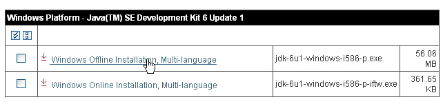
قم بتشغيل تثبيت JDK من الملف الذي تم تنزيله. بشكل افتراضي، يتم تثبيت Java في [C:\Program Files\Java]:

5.2. Eclipse
5.2.1. التثبيت الأساسي
Eclipse هو بيئة تطوير متكاملة (IDE) متاحة على الرابط [http://www.eclipse.org/] ويمكن تنزيلها من الرابط [http://www.eclipse.org/downloads/]. فيما يلي، نقوم بتنزيل Eclipse 3.2.2:

بمجرد تنزيل ملف ZIP، قم بفك ضغطه في مجلد على القرص الصلب الخاص بك:

سنشير إلى مجلد تثبيت Eclipse، الموضح أعلاه على أنه [C:\devjava\eclipse 3.2.2\eclipse]، باسم <eclipse>. [eclipse.exe] هو الملف القابل للتنفيذ، و[eclipse.ini] هو ملف التكوين الخاص به. دعونا نلقي نظرة على محتوياته:
تُستخدم هذه المعلمات عند تشغيل Eclipse على النحو التالي:
يحقق هذا نفس النتيجة التي يحققها استخدام ملف .ini من خلال إنشاء اختصار يقوم بتشغيل Eclipse باستخدام هذه الحجج نفسها. دعونا نوضحها:
- -vmargs: يشير إلى أن الحجج التالية مخصصة لآلة Java الافتراضية التي ستشغل Eclipse. Eclipse هو تطبيق Java.
- -Xms40m: ؟
- -Xmx256m: يحدد حجم الذاكرة بالميغابايت المخصصة لآلة Java الافتراضية (JVM) التي تشغل Eclipse. بشكل افتراضي، يبلغ هذا الحجم 256 ميغابايت، كما هو موضح هنا. إذا سمح النظام بذلك، يُفضل استخدام 512 ميغابايت.
يتم تمرير هذه الوسيطات إلى JVM التي ستقوم بتشغيل Eclipse. يتم تمثيل JVM بملف [java.exe] أو [javaw.exe]. أين يوجد هذا الملف؟ في الواقع، يوجد في عدة أماكن:
- في مسار نظام التشغيل
- في المجلد <JAVA_HOME>/jre/bin، حيث JAVA_HOME هو متغير نظام يحدد المجلد الجذر لـ JDK.
- في موقع يتم تمريره كحجة إلى Eclipse بالشكل -vm <path>\javaw.exe
يُفضل هذا الحل الأخير لأن الحلين الآخرين عرضة لتقلبات عمليات تثبيت التطبيقات اللاحقة، والتي قد تغير مسار نظام التشغيل أو متغير JAVA_HOME.
لذلك نقوم بإنشاء الاختصار التالي:

<eclipse>\eclipse.exe" -vm "C:\Program Files\Java\jre1.6.0_01\bin\javaw.exe" -vmargs -Xms40m -Xmx512m | |
مجلد تثبيت Eclipse <eclipse> |
بمجرد الانتهاء من ذلك، قم بتشغيل Eclipse باستخدام هذا الاختصار. سيظهر مربع حوار:
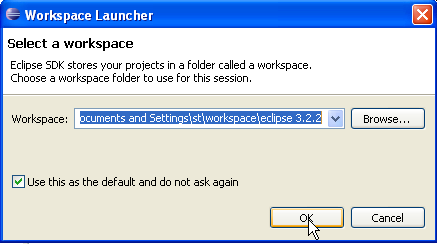
[workspace] هي مساحة عمل. دعونا نقبل القيم الافتراضية المقدمة. بشكل افتراضي، سيتم إنشاء مشاريع Eclipse في مجلد <workspace> المحدد في مربع الحوار هذا. هناك طريقة لتجاوز هذا السلوك. وهذا ما سنفعله بشكل منهجي. لذلك، فإن الرد المقدم في مربع الحوار هذا ليس مهمًا.
بمجرد اكتمال هذه الخطوة، يتم عرض بيئة تطوير Eclipse:

نغلق عرض [Welcome] كما هو مقترح أعلاه:

قبل إنشاء مشروع Java، سنقوم بتكوين Eclipse لتحديد JDK الذي سيتم استخدامه لتجميع مشاريع Java. للقيام بذلك، نختار الخيار [Window / Preferences / Java / Installed JREs]:
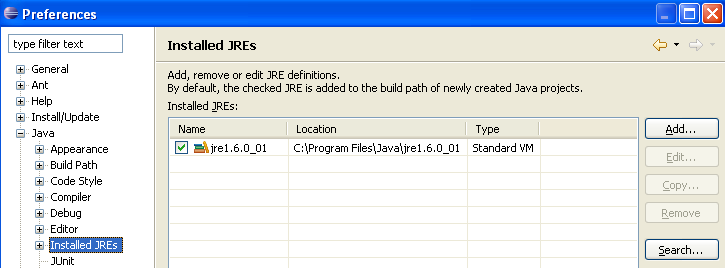
عادةً، يجب أن يكون JRE (Java Runtime Environment) المستخدم لتشغيل Eclipse نفسه موجودًا في قائمة JREs. وعادةً ما يكون هذا هو الوحيد. يمكنك إضافة JREs باستخدام زر [Add]. يجب عليك بعد ذلك تحديد الدليل الجذر لـ JRE. سيؤدي زر [Search] إلى بدء البحث عن JREs على القرص. هذه طريقة جيدة لتتبع JREs التي تقوم بتثبيتها ثم تنسى إلغاء تثبيتها عند الترقية إلى إصدار أحدث. أعلاه، JRE المحدد هو الذي سيتم استخدامه لتجميع وتشغيل مشاريع Java. هذا هو الذي تم تثبيته في القسم 5.1 ويستخدم أيضًا لتشغيل Eclipse. النقر المزدوج عليه يفتح خصائصه:
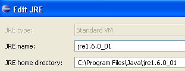
الآن، لنقم بإنشاء مشروع Java [File / New / Project]:
 |  |
اختر [مشروع Java]، ثم [التالي] ->

في [2]، نحدد مجلدًا فارغًا سيتم تثبيت مشروع Java فيه. في [1]، نسمي المشروع. لا يجب أن يحمل اسم المجلد، كما قد يوحي المثال أعلاه. بمجرد الانتهاء من ذلك، نستخدم زر [التالي] للانتقال إلى الصفحة التالية من معالج الإنشاء:
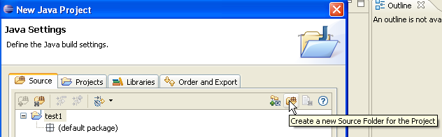
أعلاه، نقوم بإنشاء مجلد خاص داخل المشروع لتخزين ملفات المصدر (.java):

 |
- في [1]، نرى المجلد [src]، الذي سيحتوي على ملفات المصدر .java
- في [2]، نرى المجلد [bin] حيث سيتم تخزين ملفات .class المُجمَّعة
نُنهي المعالج بالنقر على [Finish]. لدينا الآن هيكل مشروع Java:

انقر بزر الماوس الأيمن على مشروع [test1] لإنشاء فئة Java:
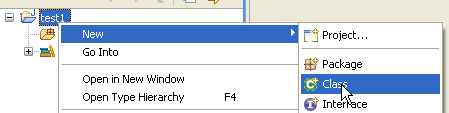
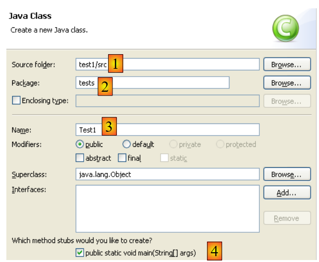 |
- في [1]، المجلد الذي سيتم إنشاء الفئة فيه. بشكل افتراضي، يقترح Eclipse مجلد المشروع الحالي.
- في [2]، الحزمة التي سيتم وضع الفئة فيها
- في [3]، اسم الفئة
- في [4]، نحدد أنه يجب إنشاء الطريقة الثابتة [main]
نؤكد المعالج بالنقر على [Finish]. ثم يتم تعزيز المشروع بفئة:

قام Eclipse بإنشاء الهيكل الأساسي للفئة. يمكن الوصول إليه بالنقر المزدوج على [Test1.java] أعلاه:

نقوم بتعديل الكود أعلاه على النحو التالي:

نقوم بتشغيل برنامج [Test1.java]: [انقر بزر الماوس الأيمن على Test1.java -> تشغيل كـ -> تطبيق Java]

يتم عرض نتيجة التنفيذ في نافذة [Console]:
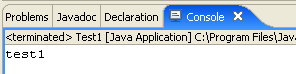
من المفترض أن تظهر نافذة [Console] بشكل افتراضي. إذا لم تظهر، يمكنك عرضها عبر [Window/Show View/Console]:

5.2.2. اختيار المُترجم
يتيح لك Eclipse إنشاء كود متوافق مع Java 1.4 و Java 1.5 و Java 1.6. بشكل افتراضي، يتم تكوينه لإنشاء كود متوافق مع Java 1.4. تتطلب واجهة برمجة تطبيقات JPA كود Java 1.5. نقوم بتغيير نوع الكود الذي يتم إنشاؤه عبر [Window / Preferences / Java / Compiler]:
 |
- في [1]: اختيار خيار [Java / Compiler]
- في [2]: حدد توافق Java 5.0
5.2.3. تثبيت ملفات Callisto
تسمح لك النسخة الأساسية المثبتة أعلاه بإنشاء تطبيقات Java ذات واجهة المستخدم النصية، ولكن ليس تطبيقات الويب أو تطبيقات Java من نوع Swing؛ وإلا، فسيتعين عليك القيام بكل شيء بنفسك. سنقوم بتثبيت العديد من المكونات الإضافية:
اتبع الخطوات التالية [Help/Software Updates/Find and Install]:
 |
- في [2]، حدد أنك تريد تثبيت مكونات إضافية جديدة
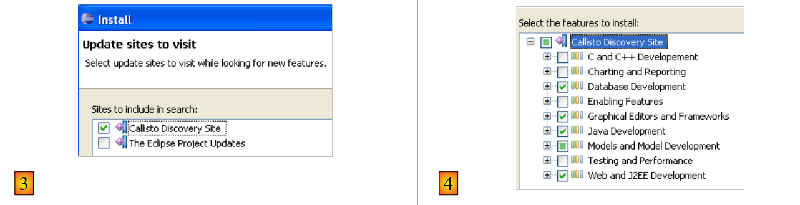 |
- في [3]، حدد المواقع التي تريد البحث فيها عن المكونات الإضافية
- في [4]، حدد المكونات الإضافية المطلوبة
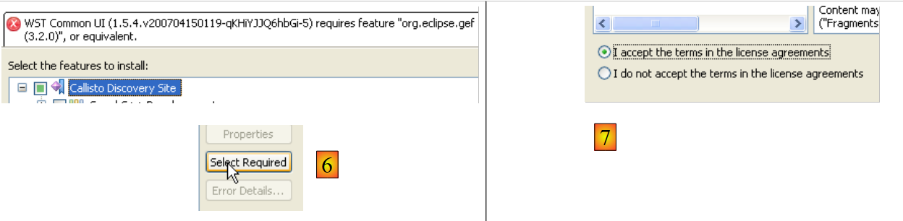 |
- في [5]، يشير Eclipse إلى أنك قد حددت مكونًا إضافيًا يعتمد على مكونات إضافية أخرى لم يتم تحديدها
- في [6]، استخدم زر [Select Required] (تحديد المطلوب) لتحديد المكونات الإضافية المفقودة تلقائيًا
- في [7]، اقبل شروط الترخيص لهذه المكونات الإضافية المختلفة
 |
- في [8]، سترى قائمة بجميع المكونات الإضافية التي سيتم تثبيتها
- في [9]، ابدأ في تنزيل هذه المكونات الإضافية
- في [10]، بمجرد تنزيلها، قم بتثبيتها جميعًا دون التحقق من توقيعاتها
 |
- في [11]، بمجرد تثبيت المكونات الإضافية، دع Eclipse يعيد التشغيل
- في [12]، إذا انتقلت إلى [File/New/Project]، ستجد أنه يمكنك الآن إنشاء تطبيقات ويب، وهو ما لم يكن ممكنًا في البداية.
5.2.4. تثبيت المكون الإضافي [ TestNG]
TestNG (Test Next Generation) هي أداة اختبار الوحدات التي تشبه JUnit من حيث المفهوم. ومع ذلك، فهي تقدم تحسينات تجعلنا نفضلها على JUnit هنا. نواصل كما فعلنا من قبل: [Help/Software Updates/Find and Install]:
 |
- في [2]، نشير إلى أننا نريد تثبيت مكونات إضافية جديدة
 |
- في [3a]، لم يتم إدراج موقع تنزيل [TestNG]. نضيفه باستخدام [3b]
- في [4b]: موقع المكون الإضافي هو [http://beust.com/eclipse]. في [4a]، أدخل ما تريد.
 |
- في [5a]، تم تحديد المكون الإضافي [TestNG] للتحديث. في [5b]، نبدأ التحديث.
- في [6]، تم إنشاء اتصال بموقع المكون الإضافي. يتم عرض جميع المكونات الإضافية المتاحة على الموقع. يوجد مكون إضافي واحد فقط هنا، ونقوم بتحديده قبل الانتقال إلى الخطوة التالية.
 |
- في [7]، نقبل شروط ترخيص المكون الإضافي
- في [8]، نرى قائمة بجميع المكونات الإضافية التي سيتم تثبيتها — وهي واحدة في هذه الحالة. نبدأ التنزيل. ثم يسير كل شيء كما هو موضح أعلاه بالنسبة لمكونات Callisto الإضافية.
بمجرد إعادة تشغيل Eclipse، يمكننا التحقق من وجود المكون الإضافي الجديد، على سبيل المثال، من خلال عرض طرق العرض المتاحة [Window / Show View / Other]:
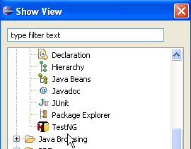 |
كما هو موضح أعلاه، يوجد الآن عرض [TestNG] لم يكن موجودًا من قبل.
5.2.5. تثبيت المكون الإضافي [ Hibernate Tools]
Hibernate هو مزود JPA، ويعد المكون الإضافي [Hibernate Tools] لـ Eclipse مفيدًا في إنشاء تطبيقات JPA. اعتبارًا من مايو 2007، لا يدعم سوى أحدث إصدار منه (3.2.0beta9) العمل مع Hibernate/JPA، وهو غير متاح عبر الآلية الموضحة للتو. تتوفر فقط الإصدارات الأقدم. لذلك سنقوم بإجراء مختلف.
المكوّن الإضافي متاح على موقع Hibernate Tools: http://tools.hibernate.org/.
 |
- في [1]، حدد أحدث إصدار من Hibernate Tools
- في [2]، قم بتنزيله
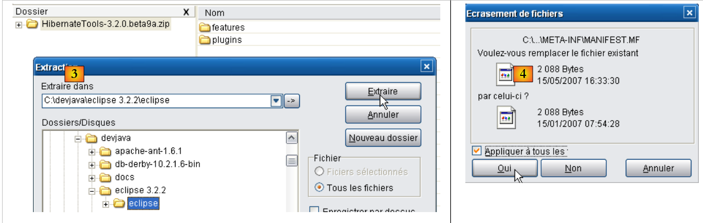 |
- في [3]، استخدم أداة فك الضغط لاستخراج ملف ZIP الذي تم تنزيله إلى مجلد <eclipse> (من الأفضل إغلاق Eclipse)
- في [4]، وافق على أن بعض الملفات سيتم استبدالها أثناء العملية
أعد تشغيل Eclipse:
 |
- في [1]: افتح عرضًا
- في [2]: يوجد الآن منظور [Hibernate Console]
لن نواصل استخدام المكون الإضافي [Hibernate Tools] (انقر على "إلغاء" في [2]). يتم شرح كيفية استخدامه في أمثلة البرنامج التعليمي.
في بعض الأحيان لا يكتشف Eclipse المكونات الإضافية الجديدة. يمكنك إجباره على إعادة فحص جميع مكوناته الإضافية باستخدام الخيار -clean. وبالتالي، سيتم تعديل ملف الاختصار القابل للتنفيذ لـ Eclipse على النحو التالي:
"<eclipse>\eclipse.exe" -clean -vm "C:\Program Files\Java\jre1.6.0_01\bin\javaw.exe" -vmargs -Xms40m -Xmx512m
بمجرد اكتشاف Eclipse للمكونات الإضافية الجديدة، قم بإزالة الخيار -clean أعلاه.
5.2.6. تثبيت المكون الإضافي [ SQL Explorer]
سنقوم الآن بتثبيت مكون إضافي سيسمح لنا باستكشاف محتويات قاعدة البيانات مباشرةً من Eclipse. يمكن العثور على المكونات الإضافية المتاحة لـ Eclipse على الموقع الإلكتروني [http://eclipse-plugins.2y.net/eclipse/plugins.jsp]:
 |
- في [1]: موقع إضافات Eclipse
- في [2]: حدد فئة [قاعدة البيانات]
- [3]: في فئة [Database]، حدد عرضًا مرتبًا حسب التقييم (ليس موثوقًا جدًا نظرًا لقلة عدد المصوتين)
- في [4]: يحتل QuantumDB المرتبة الأولى
- في [5]: نختار SQLExplorer، وهو أقدم وأقل تصنيفًا (المرتبة الثالثة) ولكنه لا يزال جيدًا جدًا. ننتقل إلى موقع المكون الإضافي [plugin-homepage]
 |
- في [6] و[7]: قم بتنزيل المكون الإضافي.
 |
- في [8]: قم بفك ضغط ملف zip الخاص بالمكوّن الإضافي في مجلد Eclipse.
للتحقق، أعد تشغيل Eclipse، مع استخدام الخيار -clean اختياريًا:
 |
- في [1]: افتح منظورًا جديدًا
- في [2]: نرى أن منظور [SQL Explorer] متاح. سنعود إلى هذا لاحقًا.
5.3. حاوية سيرفلت Tomcat 5.5
5.3.1. التثبيت
لتشغيل السيرفلتات، نحتاج إلى حاوية سيرفلت. نقدم هنا واحدة منها، وهي Tomcat 5.5، المتوفرة على http://tomcat.apache.org/. نوضح الإجراءات (مايو 2007) لتثبيتها. إذا كان هناك إصدار سابق من Tomcat مثبت بالفعل، فمن الأفضل إزالته أولاً.

لتنزيل المنتج، اتبع الرابط [Tomcat 5.x] أعلاه:

يمكنك تنزيل ملف .exe لنظام التشغيل Windows. بمجرد التنزيل، قم بتشغيل تثبيت Tomcat بالنقر المزدوج عليه:

اقبل شروط الترخيص ->

انقر على [التالي] ->

اقبل مجلد التثبيت المقترح أو قم بتغييره باستخدام [تصفح] ->

قم بتعيين اسم المستخدم وكلمة المرور لمسؤول خادم Tomcat. هنا استخدمنا [admin / admin] ->
 |
يتطلب Tomcat 5.x وجود JRE 1.5. ومن المفترض أن يكتشف البرنامج الإصدار المثبت على جهازك. في الأعلى، المسار المحدد هو مسار JRE 1.6 الذي تم تنزيله في القسم 5.1. إذا لم يتم العثور على JRE، فحدد دليل الجذر الخاص به باستخدام الزر [1]. بمجرد الانتهاء من ذلك، استخدم الزر [تثبيت] لتثبيت Tomcat 5.x ->

يُكمل الزر [Finish] عملية التثبيت. يُشار إلى وجود Tomcat برمز على الجانب الأيمن من شريط مهام Windows:

يمنحك النقر بزر الماوس الأيمن على هذا الرمز إمكانية الوصول إلى أوامر بدء تشغيل الخادم وإيقافه:

نستخدم خيار [إيقاف الخدمة] لإيقاف خادم الويب الآن:

لاحظ التغيير في حالة الرمز. يمكن إزالة الرمز من شريط المهام:

تم تثبيت Tomcat في المجلد الذي اختاره المستخدم، والذي سنشير إليه الآن باسم <tomcat>. هيكل الدليل لإصدار Tomcat 5.5.23 الذي تم تنزيله هو كما يلي:

أضاف تثبيت Tomcat عددًا من الاختصارات إلى قائمة [ابدأ]. نستخدم الرابط [Monitor] أدناه لتشغيل أداة إيقاف/تشغيل Tomcat:

ثم نرى الرمز الموضح سابقًا:
يمكن تشغيل أداة مراقبة Tomcat بالنقر المزدوج على هذا الرمز:

تسمح لنا أزرار [Start - Stop - Pause] - Restart بتشغيل الخادم وإيقافه وإعادة تشغيله. نبدأ تشغيل الخادم بالنقر على [Start]، ثم ندخل عنوان URL http://localhost:8080 باستخدام متصفح. ومن المفترض أن نرى صفحة مشابهة لما يلي:

يمكنك اتباع الروابط أدناه للتحقق من تثبيت Tomcat بشكل صحيح:

تستحق جميع الروابط الموجودة على صفحة [http://localhost:8080] الاستكشاف، ونشجع القارئ على القيام بذلك. وستتاح لنا الفرصة للعودة إلى الروابط التي تتيح لك إدارة تطبيقات الويب التي تم نشرها على الخادم:

5.3.2. نشر تطبيق ويب على خادم Tomcat
5.3.3. النشر
يجب أن يتبع تطبيق الويب قواعد معينة ليتم نشره داخل حاوية سيرفلت. لنفترض أن <webapp> هو دليل تطبيق الويب. يتكون تطبيق الويب من:
في المجلد <webapp>\WEB-INF\classes | |
في المجلد <webapp>\WEB-INF\lib | |
في مجلد <webapp> أو المجلدات الفرعية |
يتم تكوين تطبيق الويب بواسطة ملف XML: <webapp>\WEB-INF\web.xml. هذا الملف ليس ضروريًا في الحالات البسيطة، خاصةً عندما يحتوي تطبيق الويب على ملفات ثابتة فقط. لنقم بإنشاء ملف HTML التالي:
<html>
<head>
<title>Application exemple</title>
</head>
<body>
Application exemple active ....
</body>
</html>
ودعونا نحفظه في مجلد:

إذا قمنا بتحميل هذا الملف في متصفح، فسنحصل على الصفحة التالية:

يُظهر عنوان URL الذي يعرضه المتصفح أن الصفحة لم يتم تقديمها بواسطة خادم ويب، بل تم تحميلها مباشرةً بواسطة المتصفح. نريد الآن أن تكون متاحة عبر خادم الويب Tomcat.
لنعد إلى شجرة الدليل <tomcat>:
يتم تكوين تطبيقات الويب التي تم نشرها على خادم Tomcat باستخدام ملفات XML الموجودة في المجلد [<tomcat>\conf\Catalina\localhost]:
 |  |
يمكن إنشاء ملفات XML هذه يدويًا نظرًا لبساطة هيكلها. وبدلاً من اتباع هذا النهج، سنستخدم أدوات الويب التي يوفرها Tomcat.
5.3.4. إدارة Tomcat
على صفحة تسجيل الدخول http://localhost:8080، يوفر الخادم روابط للإدارة:

يتيح لنا رابط [إدارة Tomcat] تكوين الموارد التي يوفرها Tomcat لتطبيقات الويب المنشورة بداخله، مثل تجمع اتصالات قاعدة البيانات. دعونا نتبع الرابط:

تشير الصفحة التي تظهر إلى أن إدارة Tomcat 5.x تتطلب حزمة محددة تسمى "admin". لنعد إلى موقع Tomcat [http://tomcat.apache.org/download-55.cgi]:

دعونا ننزل الملف المضغوط المسمى [Web Application Administration] ثم نقوم بفك ضغطه. محتوياته هي كما يلي:
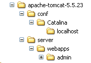
يجب نسخ المجلد [admin] إلى [<tomcat>\server\webapps]، حيث <tomcat> هو المجلد الذي تم تثبيت Tomcat 5.x فيه:

يحتوي المجلد [localhost] على ملف [admin.xml] يجب نسخه إلى [<tomcat>\conf\Catalina\localhost]:

أوقف Tomcat ثم أعد تشغيله إذا كان قيد التشغيل. بعد ذلك، باستخدام متصفح، اطلب صفحة تسجيل الدخول إلى خادم الويب مرة أخرى:

انقر على رابط [Tomcat Administration]. ستظهر لك صفحة تسجيل الدخول (قد تحتاج إلى إعادة تحميل الصفحة أو تحديثها لرؤيتها):
 |  |
هنا، يجب عليك إعادة إدخال بيانات الاعتماد التي قدمتها أثناء تثبيت Tomcat. في حالتنا، ندخل اسم المستخدم وكلمة المرور "admin". يؤدي النقر على زر [Login] إلى نقلك إلى الصفحة التالية:

تسمح هذه الصفحة لمسؤول Tomcat بتحديد
- مصادر البيانات،
- والمعلومات اللازمة لإرسال البريد الإلكتروني (جلسات البريد)،
- بيانات البيئة التي يمكن لجميع التطبيقات الوصول إليها (Environment Entries)،
- إدارة مستخدمي ومسؤولي Tomcat (المستخدمون)،
- إدارة مجموعات المستخدمين (المجموعات)،
- تحديد الأدوار (أي ما يمكن للمستخدم فعله وما لا يمكنه فعله)،
- تحديد خصائص تطبيقات الويب التي ينشرها الخادم (خدمة كاتالينا)
دعونا نتبع الرابط [الأدوار] أعلاه:

تسمح لك الدور بتحديد ما يمكن للمستخدم أو مجموعة المستخدمين فعله أو عدم فعله. ترتبط حقوق معينة بالدور. يرتبط كل مستخدم بدور واحد أو أكثر ويتمتع بالحقوق المرتبطة به. يمنح دور [manager] أدناه الحق في إدارة تطبيقات الويب التي تم نشرها في Tomcat (النشر، التشغيل، الإيقاف، إلغاء التحميل). سننشئ مستخدم [manager] ونربطه بدور [manager] للسماح له بإدارة تطبيقات Tomcat. للقيام بذلك، نتبع رابط [Users] في صفحة الإدارة:

نرى أن هناك عددًا من المستخدمين موجودين بالفعل. نستخدم خيار [إنشاء مستخدم جديد] لإنشاء مستخدم جديد:
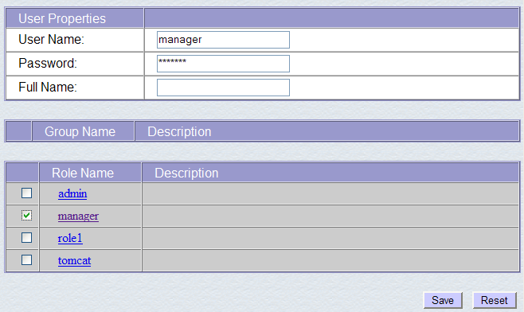
نمنح المستخدم manager كلمة المرور manager ونخصص له دور manager. نستخدم زر [Save] لتأكيد هذه الإضافة. يظهر المستخدم الجديد في قائمة المستخدمين:

سيتم إضافة هذا المستخدم الجديد إلى الملف [<tomcat>\conf\tomcat-users.xml]:

الذي يكون محتواه كما يلي:
<?xml version='1.0' encoding='utf-8'?>
<tomcat-users>
<role rolename="tomcat"/>
<role rolename="role1"/>
<role rolename="manager"/>
<role rolename="admin"/>
<user username="tomcat" password="tomcat" roles="tomcat"/>
<user username="role1" password="tomcat" roles="role1"/>
<user username="both" password="tomcat" roles="tomcat,role1"/>
<user username="manager" password="manager" fullName="" roles="manager"/>
<user username="admin" password="admin" roles="admin,manager"/>
</tomcat-users>
- السطر 10: المستخدم [manager] الذي تم إنشاؤه
هناك طريقة أخرى لإضافة المستخدمين وهي تعديل هذا الملف مباشرة. هذا هو الإجراء الذي يجب اتباعه إذا نسيت، على سبيل المثال، كلمة مرور حساب admin أو manager.
5.3.5. إدارة تطبيقات الويب التي تم نشرها
الآن دعونا نعود إلى صفحة تسجيل الدخول [http://localhost:8080] ونتبع رابط [Tomcat Manager]:

سيؤدي ذلك إلى ظهور صفحة المصادقة. نقوم بتسجيل الدخول باسم manager / manager، أي المستخدم الذي يحمل دور [manager] الذي أنشأناه للتو. في الواقع، لا يمكن استخدام هذا الرابط إلا للمستخدم الذي يحمل هذا الدور. في السطر 11 من ملف [tomcat-users.xml]، نرى أن المستخدم [admin] يحمل أيضًا دور [manager]. لذلك يمكننا أيضًا استخدام بيانات اعتماد [admin / admin].
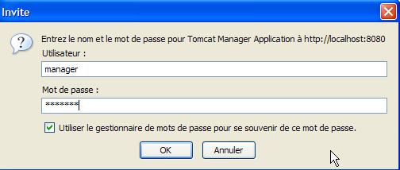
يتم توجيهنا إلى صفحة تسرد التطبيقات التي تم نشرها حاليًا في Tomcat:

يمكننا إضافة تطبيق جديد باستخدام النماذج الموجودة في أسفل الصفحة:

هنا، نريد نشر التطبيق النموذجي الذي أنشأناه سابقًا داخل Tomcat. نقوم بذلك على النحو التالي:

/example | الاسم المستخدم لتعريف تطبيق الويب المراد نشره | |
C:\data\work\2006-2007\eclipse\dvp-jpa\annexes\tomcat\example | مجلد تطبيق الويب |
لاسترداد الملف [C:\data\work\2006-2007\eclipse\dvp-jpa\annexes\tomcat\example\example.html]، سنطلب عنوان URL [http://localhost:8080/exemple/exemple.html] من Tomcat. يُستخدم السياق لتسمية جذر شجرة دليل تطبيق الويب الذي تم نشره. نستخدم زر [Deploy] لنشر التطبيق. إذا سارت الأمور على ما يرام، فسنحصل على صفحة الاستجابة التالية:

ويظهر التطبيق الجديد في قائمة التطبيقات التي تم نشرها:
 |
دعونا نعلق سطر السياق /example أعلاه:
رابط إلى http://localhost:8080/exemple | |
يتيح لك تشغيل التطبيق | |
يتيح لك إيقاف التطبيق | |
يعيد تحميل التطبيق. وهذا ضروري، على سبيل المثال، عندما تكون قد أضفت، أو تعديل أو حذف فئات معينة من التطبيق. | |
إزالة سياق [/example]. يختفي التطبيق من قائمة التطبيقات المتاحة. |
الآن بعد أن تم نشر تطبيق /example الخاص بنا، يمكننا إجراء بعض الاختبارات. نطلب الصفحة [example.html] عبر عنوان URL [http://localhost:8080/exemple/vues/exemple.html]:

هناك طريقة أخرى لنشر تطبيق ويب على خادم Tomcat وهي توفير المعلومات التي أدخلناها عبر واجهة الويب في ملف [context].xml الموجود في المجلد [<tomcat>\conf\Catalina\localhost]، حيث [context] هو اسم تطبيق الويب.
لنعد إلى واجهة إدارة Tomcat:

دعونا نزيل تطبيق [/example] باستخدام رابط [Undeploy] الخاص به:

لم يعد تطبيق [/example] جزءًا من قائمة التطبيقات النشطة. والآن دعونا نحدد ملف [example.xml] التالي:
يتكون ملف XML من علامة <Context> واحدة تحدد سمة docBase المجلد الذي يحتوي على تطبيق الويب المراد نشره. لنضع هذا الملف في <tomcat>\conf\Catalina\localhost:

أوقف Tomcat وأعد تشغيله إذا لزم الأمر، ثم اعرض قائمة التطبيقات النشطة باستخدام أداة إدارة Tomcat:

التطبيق [/example] موجود بالفعل. دعونا نطلب عنوان URL في متصفح:
[http://localhost:8080/exemple/exemple.html]:

يمكن إزالة تطبيق الويب الذي تم نشره بهذه الطريقة من قائمة التطبيقات المنشورة، بنفس الطريقة السابقة، باستخدام رابط [Undeploy]:
في هذه الحالة، يتم إزالة ملف [example.xml] تلقائيًا من المجلد [<tomcat>\conf\Catalina\localhost].
أخيرًا، لنشر تطبيق ويب داخل Tomcat، يمكنك أيضًا تعريف سياقه في ملف [<tomcat>\conf\server.xml]. لن نتناول هذه النقطة هنا.
5.3.6. تطبيق ويب مع صفحة رئيسية
عندما نطلب عنوان URL [http://localhost:8080/exemple/]، نحصل على الاستجابة التالية:

مع بعض الإصدارات السابقة من Tomcat، كنا سنحصل على محتويات الدليل الفعلي للتطبيق [/example].
يمكننا تكوين النظام بحيث يتم عرض ما يُسمى بـ "الصفحة الرئيسية" عند طلب السياق. للقيام بذلك، نقوم بإنشاء ملف [web.xml] ووضعه في المجلد <example>\WEB-INF، حيث يمثل <example> المجلد الفعلي لتطبيق الويب [/example]. ويكون الملف كما يلي:
- الأسطر 2–5: العلامة الجذرية <web-app> مع السمات المنسوخة والملصقة من ملف [web.xml] لتطبيق Tomcat [/admin] (<tomcat>/server/webapps/admin/WEB-INF/web.xml).
- السطر 7: الاسم المعروض لتطبيق الويب. هذا اسم يتم اختياره بحرية مع قيود أقل من اسم سياق التطبيق. على سبيل المثال، يمكن أن يحتوي على مسافات، وهو ما لا يمكن في اسم السياق. يتم عرض هذا الاسم، على سبيل المثال، بواسطة مسؤول Tomcat:

- السطر 8: وصف تطبيق الويب. يمكن بعد ذلك استرداد هذا النص برمجياً.
- الأسطر 9-11: قائمة ملفات الترحيب. تُستخدم علامة <welcome-file-list> لتحديد قائمة طرق العرض التي سيتم عرضها عندما يطلب العميل سياق التطبيق. يمكن أن تكون هناك طرق عرض متعددة. يتم عرض أول عرض يتم العثور عليه للعميل. هنا لدينا عرض واحد فقط: [/example.html]. وبالتالي، عندما يطلب العميل عنوان URL [/example]، سيكون عنوان URL [/example/example.html] هو الذي يتم تقديمه له فعليًا.
دعونا نحفظ ملف [web.xml] هذا في <example>\WEB-INF:

إذا كان Tomcat لا يزال قيد التشغيل، يمكنك إجباره على إعادة تحميل تطبيق الويب [/example] باستخدام رابط [Reload]:

أثناء عملية "إعادة التحميل" هذه، يقوم Tomcat بإعادة قراءة ملف [web.xml] الموجود في [<example>\WEB-INF] إذا كان موجودًا. وهذا هو الحال هنا. إذا تم إيقاف Tomcat، فقم بإعادة تشغيله.
باستخدام متصفح، اطلب عنوان URL [http://localhost:8080/exemple/]:

لقد نجحت آلية ملف المضيف.
5.3.7. دمج Tomcat في Eclipse
سنقوم الآن بدمج Tomcat في Eclipse. يتيح لك هذا الدمج:
- تشغيل/إيقاف Tomcat من داخل Eclipse
- تطوير تطبيقات الويب Java وتشغيلها على Tomcat. يتيح لك دمج Eclipse/Tomcat تتبع (تصحيح) تنفيذ التطبيق، بما في ذلك تنفيذ فئات Java (servlets) التي يتم تشغيلها بواسطة Tomcat.
دعونا نطلق Eclipse، ثم نفتح عرض [Servers]:
 |
- في [1]: Window/Show View/Other
- في [2]: حدد عرض [الخوادم] وانقر على [موافق]
 |
- في [1]، لدينا الآن عرض [الخوادم] جديد
- في [2]، انقر بزر الماوس الأيمن على العرض واختر [New/Server]
- في [3]، حدد خادم [Tomcat 5.5]، ثم انقر فوق [التالي]
 |
- في [4]، حدد دليل تثبيت Tomcat 5.5
- في [5]، حدد أنه لا توجد مشاريع Eclipse/Tomcat في الوقت الحالي. انقر فوق [Finish]
يؤدي إضافة الخادم إلى ظهور مجلد في مستكشف مشاريع Eclipse [6] وظهور خادم في عرض [الخوادم] [7]:
 |
تعرض طريقة عرض [الخوادم] جميع الخوادم المسجلة؛ وهنا، يظهر فقط خادم Tomcat 5.5 الذي أضفناه للتو. النقر بزر الماوس الأيمن عليه يتيح الوصول إلى الأوامر لبدء تشغيل الخادم أو إيقافه أو إعادة تشغيله:

في الأعلى، نقوم بتشغيل الخادم. عند بدء التشغيل، يتم كتابة عدد من السجلات في عرض [Console]:
يستغرق فهم هذه السجلات بعض الوقت للتعود عليها. لن نتطرق إليها الآن. ومع ذلك، من المهم التحقق من أنها لا تشير إلى أي أخطاء في تحميل السياق. في الواقع، عند التشغيل، يحاول خادم Tomcat/Eclipse تحميل سياق التطبيقات التي يديرها. يتضمن تحميل سياق التطبيق معالجة ملف [web.xml] الخاص به وتحميل فئة واحدة أو أكثر تقوم بتهيئته. يمكن أن تحدث عدة أنواع من الأخطاء:
- يحتوي ملف [web.xml] على خطأ في بناء الجملة. هذا هو الخطأ الأكثر شيوعًا. يوصى باستخدام أداة قادرة على التحقق من صحة مستند XML أثناء إنشائه.
- لم يتم العثور على بعض الفئات المطلوب تحميلها. يتم البحث عنها في [WEB-INF/classes] و [WEB-INF/lib]. يجب عليك عمومًا التحقق من وجود الفئات الضرورية وتدقيق تهجئة تلك المعلنة في ملف [web.xml].
لا يحتوي الخادم الذي تم تشغيله من Eclipse على نفس التكوين المثبت في القسم 5.3. للتحقق من ذلك، قم بالوصول إلى عنوان URL [http://localhost:8080] باستخدام متصفح:
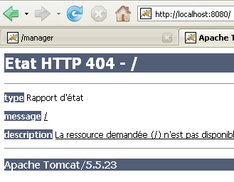
لا تشير هذه الاستجابة إلى أن الخادم لا يعمل، بل إلى أن المورد / المطلوب غير متاح. مع دمج خادم Tomcat في Eclipse، ستكون هذه الموارد عبارة عن مشاريع ويب. سنرى ذلك لاحقًا. في الوقت الحالي، دعنا نوقف Tomcat:

يمكن تغيير وضع التشغيل السابق. دعونا نعود إلى عرض [Servers] ونضغط مرتين على خادم Tomcat للوصول إلى خصائصه:
 |  |
مربع الاختيار [1] هو المسؤول عن السلوك السابق. عند تحديده، لا يتم إدراج تطبيقات الويب المطورة في Eclipse في ملفات التكوين الخاصة بخادم Tomcat المرتبط، بل في ملفات تكوين منفصلة. ونتيجة لذلك، لا تتوفر التطبيقات الافتراضية داخل خادم Tomcat — [admin] و[manager]، وهما تطبيقان مفيدان. لذا، دعونا نلغي تحديد [1] ونعيد تشغيل Tomcat:
 |  |
الآن بعد الانتهاء من ذلك، دعونا نطلب عنوان URL [http://localhost:8080] في متصفح:

نرى السلوك الموصوف في القسم 5.3.4.
في الأمثلة السابقة، استخدمنا متصفحًا خارج Eclipse. يمكننا أيضًا استخدام متصفح مدمج في Eclipse:

أعلاه، نختار المتصفح الداخلي. لتشغيله من Eclipse، يمكنك استخدام الرمز التالي:

المتصفح الذي سيتم تشغيله فعليًا هو المتصفح الذي تم تحديده عبر خيار [Window -> Web Browser]. هنا، نحصل على المتصفح الداخلي:

إذا لزم الأمر، قم بتشغيل Tomcat من Eclipse وأدخل عنوان URL [http://localhost:8080] في [1]:

اتبع رابط [Tomcat Manager]:

سيُطلب منك إدخال [اسم المستخدم/كلمة المرور] المطلوبين للوصول إلى تطبيق [manager]. بناءً على تكوين Tomcat الذي قمنا بإعداده سابقًا، يمكنك إدخال [admin/admin] أو [manager/manager]. سترى بعد ذلك قائمة بالتطبيقات التي تم نشرها:

5.4. نظام إدارة قواعد البيانات Firebird
5.4.1. نظام إدارة قواعد البيانات Firebird
نظام إدارة قواعد البيانات Firebird متاح على الرابط [http://www.firebirdsql.org/]:
 |
- في [1]: استخدم خيار [تنزيل قاعدة البيانات العلائقية Firebird]
- في [2]: حدد الإصدار المطلوب من Firebird
- في [3]: قم بتنزيل ملف التثبيت الثنائي
بمجرد تنزيل الملف [3]، انقر عليه مرتين لتثبيت نظام إدارة قواعد البيانات Firebird. يتم تثبيت نظام إدارة قواعد البيانات في مجلد يحتوي على محتويات مشابهة لما يلي:

توجد الملفات الثنائية في المجلد [bin]:

يسمح لك بتشغيل/إيقاف نظام إدارة قواعد البيانات | |
عميل سطر الأوامر لإدارة قواعد البيانات |
لاحظ أنه بشكل افتراضي، يُسمى مسؤول نظام إدارة قواعد البيانات [SYSDBA] وكلمة المرور هي [masterkey]. تمت إضافة قوائم إلى [ابدأ]:

يتيح لك خيار [Firebird Guardian] تشغيل/إيقاف نظام إدارة قواعد البيانات. بعد التشغيل، يظل رمز نظام إدارة قواعد البيانات في شريط مهام Windows:
 |
لإنشاء قواعد بيانات Firebird وإدارتها باستخدام عميل سطر الأوامر [isql.exe]، يجب عليك قراءة الوثائق المرفقة مع المنتج، والتي يمكن الوصول إليها عبر اختصارات Firebird في [ابدأ/البرامج/Firebird 2.0].
من الطرق السريعة للعمل مع Firebird وتعلم لغة SQL استخدام عميل رسومي. أحد هذه العملاء هو IB-Expert، الموصوف في القسم التالي.
5.4.2. العمل مع نظام إدارة قواعد البيانات Firebird باستخدام IB- Expert
الموقع الإلكتروني الرئيسي لـ IB-Expert هو [http://www.ibexpert.com/].
 |
 |
- في [1]، حدد IBExpert
- في [2]، حدد التنزيل بعد اختيار لغتك المفضلة، إذا لزم الأمر
- في [3]، اختر الإصدار "Personal"، لأنه مجاني. لكن يجب عليك التسجيل في الموقع.
- في [4]، قم بتنزيل IBExpert
يتم تثبيت IBExpert في مجلد مشابه لما يلي:

الملف القابل للتنفيذ هو [ibexpert.exe]. عادةً ما يتوفر اختصار في قائمة [ابدأ]:

بمجرد تشغيله، يعرض IBExpert النافذة التالية:

استخدم خيار [ Database/Create Database] لإنشاء قاعدة بيانات:

يمكن أن يكون [محلي] أو [بعيد]. هنا، يقع الخادم الخاص بنا على نفس الجهاز الذي يعمل عليه [IBExpert]. نختار [محلي] | |
استخدم زر [المجلد] في القائمة المنسدلة لتحديد ملف قاعدة البيانات. يقوم Firebird بتخزين قاعدة البيانات في ملف واحد. وهذه إحدى مزاياه. يمكنك نقل قاعدة البيانات من جهاز كمبيوتر إلى آخر بمجرد نسخ الملف. تُضاف اللاحقة [.fdb] تلقائيًا. | |
SYSDBA هو المسؤول الافتراضي لتوزيعات Firebird الحالية | |
masterkey هي كلمة مرور المسؤول SYSDBA في توزيعات Firebird الحالية | |
لهجة SQL المراد استخدامها | |
إذا تم تحديد هذا المربع، فسيعرض IBExpert رابطًا إلى قاعدة البيانات بعد إنشائها |
إذا ظهرت لك الرسالة التالية عند النقر على زر [موافق] لإنشاء قاعدة البيانات:

فهذا يعني أنك لم تقم بتشغيل Firebird. قم بتشغيله. ستظهر نافذة جديدة:
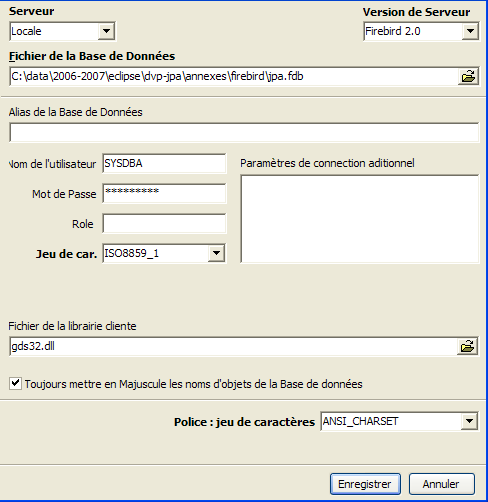
مجموعة الأحرف المراد استخدامها. يوصى بتحديد [ISO-8859-1] من القائمة المنسدلة، مما يسمح باستخدام الأحرف اللاتينية المُشَدَّدة. |
[IBExpert] قادر على إدارة أنظمة إدارة قواعد البيانات (DBMS) المختلفة المشتقة من Interbase. حدد إصدار Firebird الذي قمت بتثبيته. |
بمجرد تأكيد هذه النافذة الجديدة بالنقر فوق [تسجيل]، سترى النتيجة [1] في نافذة [مستكشف قاعدة البيانات]. قد يتم إغلاق هذه النافذة عن طريق الخطأ. لإعادتها، قم بما يلي [2]:
 |
للوصول إلى قاعدة البيانات التي تم إنشاؤها، ما عليك سوى النقر مرتين على الرابط الخاص بها. سيقوم IBExpert بعد ذلك بعرض هيكل شجري يتيح الوصول إلى خصائص قاعدة البيانات:
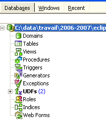
5.4.3. إنشاء جدول بيانات
لنقم بإنشاء جدول. انقر بزر الماوس الأيمن على [Tables] (انظر النافذة أعلاه) واختر خيار [New Table]. سيؤدي ذلك إلى فتح نافذة لتحديد خصائص الجدول:
 |
لنبدأ بتسمية الجدول [ARTICLES] باستخدام حقل الإدخال [1]:

استخدم حقل الإدخال [2] لتعريف مفتاح أساسي [ID]:

يتم تعيين حقل كمفتاح أساسي بالنقر المزدوج على حقل [PK] (المفتاح الأساسي). لنضف حقولًا باستخدام الزر الموجود أعلاه [3]:
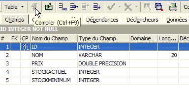
لن يتم إنشاء الجدول حتى ننتهي من "تجميع" تعريفنا. استخدم زر [Compile] أعلاه لإنهاء تعريف الجدول. يقوم IBExpert بإعداد استعلامات SQL لإنشاء الجدول ويطلب التأكيد:

ومن المثير للاهتمام أن IBExpert يعرض استعلامات SQL التي نفذها. وهذا يتيح لك تعلم لغة SQL وأي لهجة SQL خاصة قد يتم استخدامها. يقوم زر [Commit] بالتحقق من صحة المعاملة الحالية، بينما يقوم زر [Rollback] بإلغائها. هنا، نقبلها بالنقر فوق [Commit]. وبمجرد الانتهاء من ذلك، يضيف IBExpert الجدول الذي تم إنشاؤه إلى شجرة قاعدة البيانات لدينا:

بالنقر المزدوج على الجدول، يمكننا الوصول إلى خصائصه:

تتيح لنا لوحة [القيود] إضافة قيود تكامل جديدة إلى الجدول. لنفتحها:
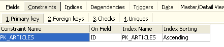
نرى قيد المفتاح الأساسي الذي أنشأناه. يمكننا إضافة قيود أخرى:
- المفاتيح الخارجية [Foreign Keys]
- قيود سلامة الحقول [التحقق]
- قيود تفرد الحقول [Uniques]
دعونا نحدد ذلك:
- يجب أن تكون الحقول [ID، PRICE، CURRENTSTOCK، MINIMUMSTOCK] أكبر من 0
- يجب أن يكون حقل [NAME] غير فارغ وفريد
افتح لوحة [Checks] وانقر بزر الماوس الأيمن في منطقة تعريف القيد لإضافة قيد جديد:

دعونا نحدد القيود المطلوبة:

لاحظ أعلاه أن القيد [NAME<>''] يستخدم علامتي اقتباس مفردة، وليس علامتي اقتباس مزدوجة. قم بتجميع هذه القيود باستخدام الزر [Compile] أعلاه:

مرة أخرى، يثبت IBExpert سهولة استخدامه من خلال عرض استعلامات SQL التي نفذها. لننتقل الآن إلى لوحة [Constraints/Unique] لتحديد أن الاسم يجب أن يكون فريدًا. وهذا يعني أنه لا يمكن أن يظهر نفس الاسم مرتين في الجدول.

دعونا نحدد القيد:

ثم لنقوم بتجميعه. بمجرد الانتهاء من ذلك، افتح لوحة [DDL] (لغة تعريف البيانات) للجدول [ARTICLES]:
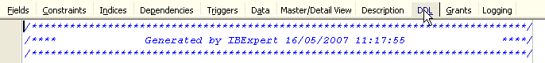
تعرض هذه اللوحة كود SQL لإنشاء الجدول مع جميع قيوده. يمكنك حفظ هذا الكود في نص برمجي لتشغيله لاحقًا:
SET SQL DIALECT 3;
SET NAMES ISO8859_1;
CREATE TABLE ARTICLES (
ID INTEGER NOT NULL,
NOM VARCHAR(20) NOT NULL,
PRIX DOUBLE PRECISION NOT NULL,
STOCKACTUEL INTEGER NOT NULL,
STOCKMINIMUM INTEGER NOT NULL
);
ALTER TABLE ARTICLES ADD CONSTRAINT CHK_ID check (ID>0);
ALTER TABLE ARTICLES ADD CONSTRAINT CHK_PRIX check (PRIX>0);
ALTER TABLE ARTICLES ADD CONSTRAINT CHK_STOCKACTUEL check (STOCKACTUEL>0);
ALTER TABLE ARTICLES ADD CONSTRAINT CHK_STOCKMINIMUM check (STOCKMINIMUM>0);
ALTER TABLE ARTICLES ADD CONSTRAINT CHK_NOM check (NOM<>'');
ALTER TABLE ARTICLES ADD CONSTRAINT UNQ_NOM UNIQUE (NOM);
ALTER TABLE ARTICLES ADD CONSTRAINT PK_ARTICLES PRIMARY KEY (ID);
5.4.4. إدراج البيانات في الجدول
حان الوقت الآن لإدخال البيانات في الجدول [ARTICLES]. للقيام بذلك، استخدم لوحة [Data]:

يتم إدخال البيانات بالنقر المزدوج على حقول الإدخال في كل صف في الجدول. تتم إضافة صف جديد باستخدام الزر [+]، ويتم حذف صف باستخدام الزر [-]. يتم تنفيذ هذه العمليات ضمن معاملة يتم تثبيتها باستخدام الزر [Commit Transaction] (انظر أعلاه). بدون هذا التثبيت، ستفقد البيانات.
5.4.5. محرر SQL [IB-Expert]
تسمح لغة SQL (لغة الاستعلام الهيكلية) للمستخدم بما يلي:
- إنشاء جداول عن طريق تحديد نوع البيانات التي ستخزنها والقيود التي يجب أن تستوفيها البيانات
- إدراج البيانات فيها
- تعديل بيانات معينة
- حذف بيانات أخرى
- استخدام البيانات لاسترداد المعلومات
- ...
يتيح IBExpert للمستخدمين تنفيذ الخطوات من 1 إلى 4 بشكل رسومي. لقد رأينا ذلك للتو. عندما تحتوي قاعدة البيانات على العديد من الجداول، يحتوي كل منها على مئات الصفوف، فإنك تحتاج إلى معلومات يصعب الحصول عليها بصريًا. لنفترض، على سبيل المثال، أن متجرًا عبر الإنترنت لديه آلاف العملاء شهريًا. يتم تسجيل جميع المشتريات في قاعدة بيانات. بعد ستة أشهر، تم اكتشاف أن المنتج "X" معيب. تريد الشركة الاتصال بكل من اشتراه حتى يتمكنوا من إرجاع المنتج لاستبداله مجانًا. كيف يمكن العثور على عناوين هؤلاء المشترين؟
- يمكنك تصفح جميع الجداول يدويًا والبحث عن هؤلاء المشترين. سيستغرق ذلك بضع ساعات.
- يمكننا تشغيل استعلام SQL يعرض قائمة بهؤلاء الأشخاص في غضون ثوانٍ
تكون لغة SQL مفيدة عندما
- تكون كمية البيانات في الجداول كبيرة
- عندما يكون هناك العديد من الجداول المرتبطة ببعضها
- عندما تكون المعلومات المطلوب استرجاعها موزعة عبر جداول متعددة
- ...
سنقدم الآن محرر SQL الخاص بـ IBExpert. يمكن الوصول إليه عبر خيار [أدوات/محرر SQL] أو بالضغط على [F12]:

يتيح لك هذا الوصول إلى محرر استعلامات SQL متقدم حيث يمكنك تشغيل الاستعلامات. دعنا نكتب استعلامًا:
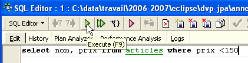
قم بتنفيذ استعلام SQL باستخدام زر [Execute] أعلاه. ستحصل على النتيجة التالية:

في الأعلى، تعرض علامة التبويب [النتائج] جدول النتائج لأمر SQL [تحديد]. لإصدار أمر SQL جديد، ما عليك سوى العودة إلى علامة التبويب [تحرير]. وسترى عندئذٍ أمر SQL الذي تم تنفيذه.

هناك عدة أزرار مفيدة على شريط الأدوات:
- يتيح لك زر [استعلام جديد] الانتقال إلى استعلام SQL جديد:

ستظهر لك بعد ذلك صفحة تحرير فارغة:

يمكنك بعد ذلك إدخال استعلام SQL جديد:

وتنفيذه:

لنعد إلى علامة التبويب [تحرير]. يتم تخزين مختلف عبارات SQL الصادرة بواسطة [IBExpert]. يتيح لك زر [الاستعلام السابق] العودة إلى عبارة SQL صدرت سابقًا:

ثم تعود إلى الاستعلام السابق:

يتيح لك زر [الاستعلام التالي] الانتقال إلى جملة SQL التالية:

سترى بعد ذلك عبارة SQL التالية في قائمة عبارات SQL المخزنة:
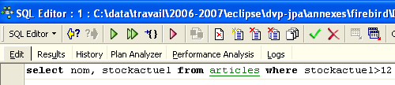
يتيح لك زر [حذف الاستعلام] حذف عبارة SQL من قائمة العبارات المخزنة:

يقوم زر [Clear Current Query] بمسح محتويات المحرر الخاص بعبارة SQL المعروضة:

يتيح لك زر [تثبيت] حفظ التغييرات التي تم إجراؤها على قاعدة البيانات بشكل دائم:

يتيح لك زر [RollBack] التراجع عن التغييرات التي تم إجراؤها على قاعدة البيانات منذ آخر عملية [Commit]. إذا لم يتم تنفيذ أي عملية [Commit] منذ الاتصال بقاعدة البيانات، فسيتم التراجع عن التغييرات التي تم إجراؤها منذ ذلك الاتصال.

لنلقِ نظرة على مثال. لنقم بإدراج صف جديد في الجدول:

يتم تنفيذ عبارة SQL ولكن لا يتم عرض أي شيء. لا نعرف ما إذا كان الإدراج قد تم أم لا. لمعرفة ذلك، دعونا ننفذ عبارة SQL التالية [New Query]:

نحصل على النتيجة التالية:

تم بالفعل إدراج الصف. دعونا نفحص محتويات الجدول بطريقة أخرى الآن. انقر نقرًا مزدوجًا على الجدول [ARTICLES] في مستكشف قاعدة البيانات:

نحصل على الجدول التالي:

يتيح لك الزر الذي يحتوي على السهم أعلاه تحديث الجدول. بعد التحديث، لا يتغير الجدول أعلاه. يبدو أن الصف الجديد لم يتم إدراجه. دعونا نعود إلى محرر SQL (F12) ثم نؤكد عبارة SQL باستخدام الزر [Commit]:

بمجرد الانتهاء من ذلك، دعونا نعود إلى جدول [ARTICLES]. يمكننا أن نرى أنه لم يتغير شيء، حتى عند استخدام زر [Refresh]:
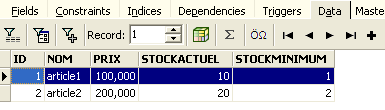
أعلاه، افتح علامة التبويب [Fields]، ثم عد إلى علامة التبويب [Data]. هذه المرة، يظهر الصف الذي تم إدراجه بشكل صحيح:

عندما يبدأ تنفيذ عبارات SQL المختلفة، يفتح المحرر ما يسمى بمعاملة على قاعدة البيانات. لن تكون التغييرات التي أجرتها عبارات SQL هذه في محرر SQL مرئية إلا طالما بقيت في نفس محرر SQL (يمكنك فتح عدة محررات). وكأن محرر SQL لا يعمل على قاعدة البيانات الفعلية بل على نسخة خاصة به. في الواقع، لا يعمل الأمر بهذه الطريقة بالضبط، ولكن هذه المقارنة يمكن أن تساعدنا في فهم مفهوم المعاملة. لن تظهر جميع التغييرات التي تم إجراؤها على النسخة أثناء المعاملة في قاعدة البيانات الفعلية إلا بعد تثبيتها عبر [Commit Transaction]. ثم تنتهي المعاملة الحالية، وتبدأ معاملة جديدة.
يمكن التراجع عن التغييرات التي تم إجراؤها أثناء المعاملة من خلال عملية تسمى [Rollback]. دعونا نجرب التجربة التالية. لنبدأ معاملة جديدة (ببساطة [Commit] المعاملة الحالية) باستخدام عبارة SQL التالية:

دعونا ننفذ هذا الأمر، الذي يحذف جميع الصفوف من جدول [ARTICLES]، ثم ننفذ [New Query] باستخدام الأمر SQL الجديد التالي:

نحصل على النتيجة التالية:

تم حذف جميع الصفوف. تذكر أن هذا تم على نسخة من جدول [ARTICLES]. للتحقق من ذلك، انقر نقرًا مزدوجًا على جدول [ARTICLES] أدناه:

واطلع على علامة التبويب [Data]:

حتى إذا استخدمنا زر [Refresh] أو انتقلنا إلى علامة التبويب [Fields] ثم عدنا إلى علامة التبويب [Data]، فإن المحتوى أعلاه يظل دون تغيير. وقد تم شرح ذلك. نحن الآن في معاملة أخرى تعمل على نسختها الخاصة. والآن دعونا نعود إلى محرر SQL (F12) ونستخدم زر [RollBack] للتراجع عن عمليات حذف الصفوف التي تمت:

يُطلب منا التأكيد:

دعونا نتأكد. يؤكد محرر SQL أن التغييرات قد تم التراجع عنها:
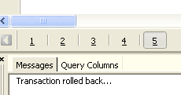
دعونا نُشغّل استعلام SQL أعلاه مرة أخرى للتحقق. عادت الآن الصفوف التي تم حذفها:

أعادت عملية [Rollback] النسخة التي يعمل عليها محرر SQL إلى الحالة التي كانت عليها في بداية المعاملة.
5.4.6. تصدير قاعدة بيانات Firebird إلى نص SQL
عند العمل مع أنظمة إدارة قواعد البيانات المختلفة، كما هو الحال في البرنامج التعليمي "استمرارية Java 5 في الممارسة العملية"، من المفيد أن تكون قادرًا على تصدير قاعدة بيانات من نظام إدارة قواعد البيانات 1 إلى نص برمجي SQL ثم استيراد هذا النص إلى نظام إدارة قواعد البيانات 2. وهذا يتجنب عددًا من العمليات اليدوية. ومع ذلك، هذا ليس ممكنًا دائمًا، حيث أن أنظمة إدارة قواعد البيانات غالبًا ما تحتوي على امتدادات SQL خاصة بها.
دعونا نوضح كيفية تصدير قاعدة البيانات [dbarticles] السابقة إلى نصوص SQL:
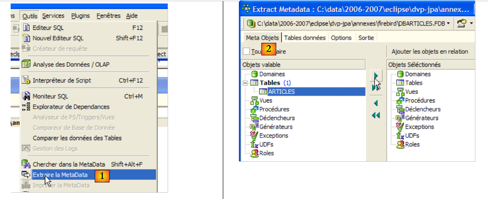 |
- في [1]: أدوات / استخراج البيانات الوصفية، لاستخراج البيانات الوصفية
- في [2]: علامة التبويب كائنات البيانات الوصفية
- في [3]: حدد جدول [المقالات] الذي تريد استخراج هيكله (البيانات الوصفية)
- في [4]: لنقل الكائن المحدد على اليسار إلى اليمين
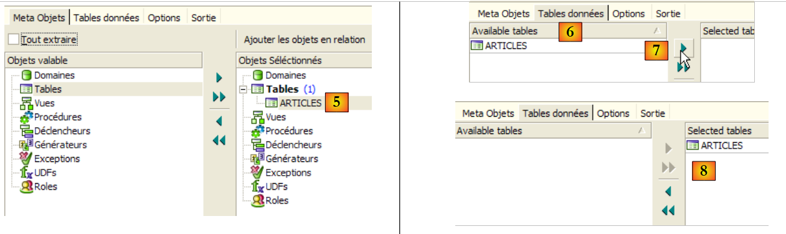 |
- في [5]: سيتم تضمين الجدول [ARTICLES] في البيانات الوصفية المستخرجة
- في [6]: تُستخدم علامة التبويب [Data Table] لتحديد الجداول التي تريد استخراج المحتوى منها (في الخطوة السابقة، تم تصدير بنية الجدول)
- في [7]: لنقل الكائن المحدد على اليسار إلى اليمين
- في [8]: النتيجة التي تم الحصول عليها
 |
- في [9]: تتيح لك علامة التبويب [خيارات] تكوين إعدادات استخراج معينة
- في [10]: قم بإلغاء تحديد الخيارات المتعلقة بإنشاء عبارات SQL للاتصال بقاعدة البيانات. هذه الخيارات خاصة بـ Firebird وبالتالي فهي غير ذات صلة بنا.
- في [11]: تتيح لك علامة التبويب [Output] تحديد المكان الذي سيتم فيه إنشاء البرنامج النصي SQL
- في [12]: حدد أن البرنامج النصي يجب أن يتم إنشاؤه في ملف
- في [13]: حدد موقع هذا الملف
- في [14]: ابدأ في إنشاء البرنامج النصي SQL
النص البرمجي الذي تم إنشاؤه، بعد إزالة التعليقات، هو كما يلي:
ملاحظة: السطران 1-2 خاصان بـ Firebird. يجب إزالتهما من البرنامج النصي الذي تم إنشاؤه للحصول على SQL عام.
5.4.7. برنامج تشغيل Firebird JDBC
يصل برنامج Java إلى البيانات من قاعدة البيانات عبر برنامج تشغيل JDBC خاص بنظام إدارة قواعد البيانات المستخدم:
 |
في بنية متعددة المستويات مثل تلك الموضحة أعلاه، تستخدم طبقة [DAO] (كائن الوصول إلى البيانات) برنامج تشغيل JDBC [1] للوصول إلى البيانات من قاعدة البيانات.
برنامج تشغيل Firebird JDBC متاح على عنوان URL الذي تم تنزيل Firebird منه:
 |
 |
- في [1]: اختر تنزيل برنامج تشغيل JDBC
- في [2]: حدد برنامج تشغيل JDBC متوافق مع JDK 1.5
- في [3]: الأرشيف الذي يحتوي على برنامج تشغيل JDBC هو [jaybird-full-2.1.1.jar]. قم باستخراج هذا الملف. سيتم استخدامه لجميع أمثلة JPA مع Firebird.
نضعه في مجلد سنشير إليه باسم <jdbc>:

للتحقق من برنامج تشغيل JDBC هذا، سنستخدم Eclipse والمكوّن الإضافي SQL Explorer (القسم 5.2.6). نبدأ بإعلان برنامج تشغيل Firebird JDBC:
 |
- في [1]: انتقل إلى Window / Preferences
- في [2]: حدد خيار SQL Explorer / JDBC Drivers
- في [3]: حدد برنامج تشغيل JDBC لـ Firebird
- في [4]: انتقل إلى مرحلة التكوين
- في [5]: انتقل إلى علامة التبويب [مسار فئة إضافي]
- في [6]، حدد ملف برنامج تشغيل JDBC. بمجرد تحديده، سيظهر في [7]. هنا، حدد برنامج التشغيل الذي تم وضعه مسبقًا في مجلد <jdbc>
- في [8]: اسم فئة Java لمحرك JDBC. يمكن الحصول عليه بالنقر فوق الزر [8b].
- انقر فوق [OK] لتأكيد التكوين
 |
- في [9]: تم الآن تكوين برنامج تشغيل Firebird JDBC. يمكنك المضي قدمًا في استخدامه.
 |
- في [1]: افتح منظورًا جديدًا
- في [2]: حدد منظور [SQL Explorer]
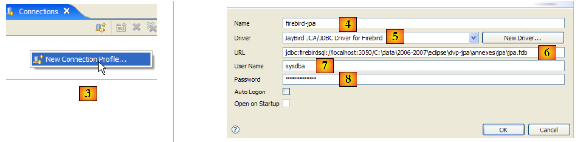 |
- في [3]: قم بإنشاء اتصال جديد
- الخطوة [4]: قم بتسميته
- في [5]: حدد برنامج تشغيل Firebird JDBC من القائمة المنسدلة
- في [6]: حدد عنوان URL لقاعدة البيانات التي تريد الاتصال بها، هنا: [jdbc:firebirdsql:localhost/3050:C:\data\2006-2007\eclipse\dvp-jpa\annexes\jpa\jpa.fdb]. [jpa.fdb] هي قاعدة البيانات التي تم إنشاؤها مسبقًا باستخدام IBExpert.
- في [7]: اسم المستخدم للاتصال، في هذه الحالة [sysdba]، مسؤول Firebird
- في [8]: كلمة المرور الخاصة بهم [masterkey]
- قم بتأكيد إعدادات الاتصال بالنقر فوق [OK]
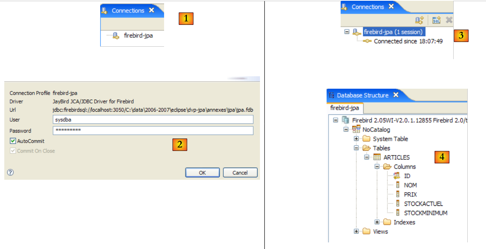 |
- في [1]: انقر نقرًا مزدوجًا على اسم الاتصال الذي تريد فتحه
- في [2]: قم بتسجيل الدخول (sysdba، masterkey)
- في [3]: تم فتح الاتصال
- في [4]: يتم عرض بنية قاعدة البيانات. يظهر الجدول [ARTICLES]. حدده.
 |
- في [5]: في نافذة [تفاصيل قاعدة البيانات]، ترى تفاصيل الكائن المحدد في [4]، وهو في هذه الحالة الجدول [ARTICLES]
- في [6]: تعرض علامة التبويب [Columns] بنية الجدول
- في [7]: تعرض علامة التبويب [Preview] بنية الجدول
يمكنك تشغيل استعلامات SQL في نافذة [محرر SQL]:
 |
- في [1]: حدد اتصالاً مفتوحاً
- في [2]: اكتب عبارة SQL المراد تنفيذها
- في [3]: قم بتنفيذه
- في [4]: راجع العبارة التي تم تنفيذها
- في [5]: النتيجة
5.5. نظام إدارة قواعد البيانات (DBMS) s MySQL5
5.5.1. التثبيت
نظام إدارة قواعد البيانات MySQL5 متاح على الرابط [http://dev.mysql.com/downloads/]:
 |
- في [1]: حدد الإصدار المطلوب
- في [2]: اختر إصدار Windows
 |
- في [3]: حدد إصدار Windows المطلوب
- في [4]: يحتوي ملف ZIP الذي تم تنزيله على ملف قابل للتنفيذ [Setup.exe] [4b] يجب عليك استخراجه وتشغيله لتثبيت MySQL5
 |
- في [5]: حدد التثبيت النموذجي
- في [6]: بمجرد اكتمال التثبيت، يمكنك تكوين خادم MySQL5
 |
- في [7]: اختر التكوين القياسي، وهو الذي يطرح أقل عدد من الأسئلة
- في [8]: سيكون خادم MySQL5 خدمة Windows
 |
- في [9]: بشكل افتراضي، يكون مسؤول الخادم هو root بدون كلمة مرور. يمكنك الاحتفاظ بهذا التكوين أو تعيين كلمة مرور جديدة لـ root. إذا كان تثبيت MySQL5 يتبع إلغاء تثبيت إصدار سابق، فقد تفشل هذه الخطوة. ولا توجد طريقة للتراجع عنها.
- في [10]: سيُطلب منك تكوين الخادم
يؤدي تثبيت MySQL5 إلى إنشاء مجلد في [ابدأ / البرامج]:
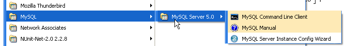
يمكنك استخدام [MySQL Server Instance Config Wizard] لإعادة تكوين الخادم:
 |
 |
 |
- في [3]: نقوم بتغيير كلمة مرور المستخدم root (هنا root/root)
5.5.2. تشغيل / إيقاف MySQL5
تم تثبيت خادم MySQL5 كخدمة Windows تبدأ تلقائيًا، أي أنها تنطلق عند بدء تشغيل Windows. هذا النمط من التشغيل غير عملي. سنقوم بتغييره:
[ابدأ / لوحة التحكم / الأداء والصيانة / أدوات الإدارة / الخدمات]:
 |
- في [1]: نضغط مرتين على [الخدمات]
- في [2]: نرى أن هناك خدمة باسم [MySQL]، وأنها قيد التشغيل [3]، وأنها تبدأ تلقائيًا [4].
لتغيير هذا الإعداد، انقر نقرًا مزدوجًا على خدمة [MySQL]:
 |
- في [1]: اضبط الخدمة على التشغيل اليدوي
- في [2]: أوقفها
- في [3]: نؤكد تكوين الخدمة الجديد
لبدء تشغيل خدمة MySQL وإيقافها يدويًا، يمكننا إنشاء اختصارين:
 |
- في [1]: الاختصار لبدء تشغيل MySQL5
- في [2]: الاختصار لإيقافه
5.5.3. عملاء إدارة MySQL
على موقع MySQL الإلكتروني، يمكنك العثور على عملاء إدارة أنظمة إدارة قواعد البيانات:
 |
- [1]: حدد [MySQL GUI Tools]، والتي تتضمن عملاء رسوميين متنوعين لإدارة نظام إدارة قواعد البيانات أو استخدامه
- في [2]: حدد إصدار Windows المناسب
 |
- في [3]: قم بتنزيل ملف .msi لتشغيله
- في [4]: بمجرد اكتمال التثبيت، ستظهر اختصارات جديدة في مجلد [قائمة ابدأ / البرامج / MySQL].
قم بتشغيل MySQL (باستخدام الاختصارات التي أنشأتها)، ثم قم بتشغيل [MySQL Administrator] عبر القائمة أعلاه:
 |
- في [1]: أدخل كلمة مرور المستخدم الجذر (root هنا)
- في [2]: تم تسجيل دخولك ويمكنك رؤية أن MySQL نشط
5.5.4. إنشاء مستخدم jpa وقاعدة بيانات jpa
يستخدم هذا البرنامج التعليمي MySQL 5 مع قاعدة بيانات باسم jpa ومستخدم يحمل نفس الاسم. سنقوم الآن بإنشائهما. أولاً، المستخدم:
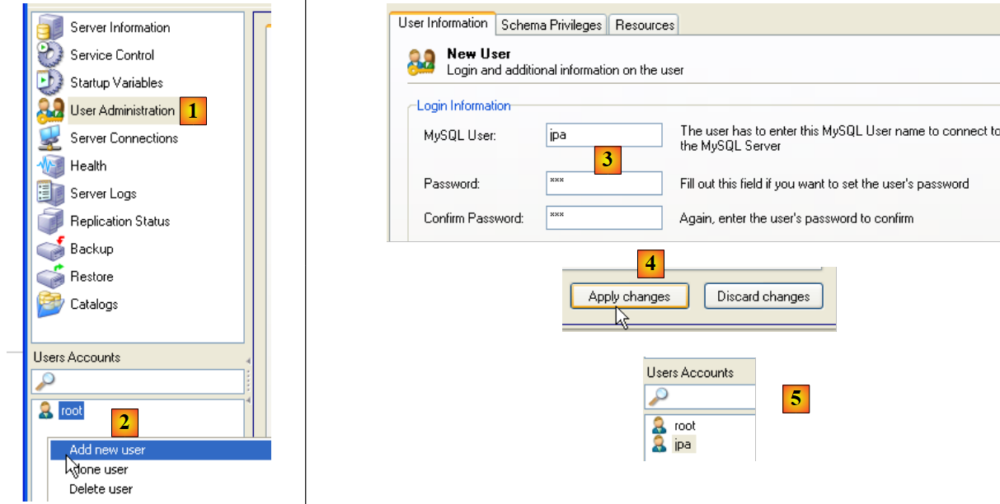 |
- في [1]: حدد [إدارة المستخدمين]
- في [2]: انقر بزر الماوس الأيمن في قسم [حسابات المستخدمين] لإنشاء مستخدم جديد
- في [3]: اسم المستخدم هو jpa وكلمة المرور هي jpa
- في [4]: قم بتأكيد الإنشاء
- في [5]: يظهر المستخدم [jpa] في نافذة [حسابات المستخدمين]
الآن قاعدة البيانات:
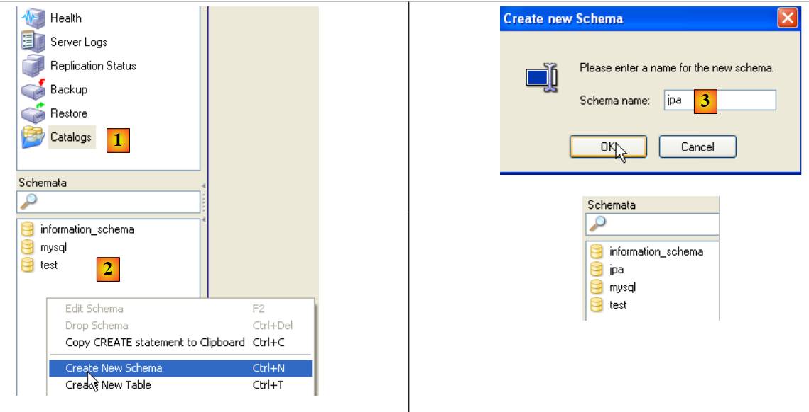 |
- في [1]: حدد خيار [Catalogs]
- في [2]: انقر بزر الماوس الأيمن على نافذة [Schemas] لإنشاء مخطط جديد (يحدد قاعدة بيانات)
- في [3]: قم بتسمية المخطط الجديد
- في [4]: يظهر في نافذة [المخططات]
 |
- في [5]: حدد مخطط [jpa]
- في [6]: تظهر الكائنات الموجودة في مخطط [jpa]، بما في ذلك الجداول. لا يوجد أي منها حتى الآن. يمكنك إنشاؤها بالنقر بزر الماوس الأيمن. سنترك ذلك للقارئ.
لنعد إلى المستخدم [jpa] لمنحه أذونات كاملة على مخطط [jpa]:
 |
- في [1]، ثم [2]: حدد المستخدم [jpa]
- في [3]: حدد علامة التبويب [Schema Privileges]
- في [4]: حدد مخطط [jpa]
- في [5]: امنح المستخدم [jpa] جميع الامتيازات على مخطط [jpa]
 |
- في [6]: تأكيد التغييرات
للتحقق من أن المستخدم [jpa] يمكنه العمل مع مخطط [jpa]، أغلق برنامج إدارة MySQL. أعد تشغيله وقم بتسجيل الدخول هذه المرة باسم [jpa/jpa]:
 |
- في [1]: تسجيل الدخول (jpa/jpa)
- في [2]: تم الاتصال بنجاح، وفي [Schemas]، نرى المخططات التي لدينا أذونات لها. نرى مخطط [jpa].
سنقوم الآن بإنشاء نفس جدول [ARTICLES] كما في نظام إدارة قواعد البيانات Firebird باستخدام البرنامج النصي SQL [schema-articles.sql] الذي تم إنشاؤه في القسم 5.4.6.
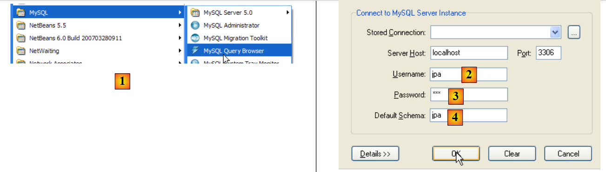 |
- في [1]: استخدم تطبيق [MySQL Query Browser]
- في [2] و[3] و[4]: قم بتسجيل الدخول (jpa / jpa / jpa)
 |
- في [5]: افتح نص SQL لتنفيذه
- في [6]: حدد البرنامج النصي [schema-articles.sql] الذي تم إنشاؤه في القسم 5.4.6.
 |
- في [7]: تم تحميل البرنامج النصي
- في [8]: قم بتنفيذه
- في [9]: تم إنشاء جدول [ARTICLES]
5.5.5. برنامج تشغيل JDBC الخاص بـ MySQL 5
يمكن تنزيل برنامج تشغيل JDBC لـ MySQL من نفس موقع DBMS:
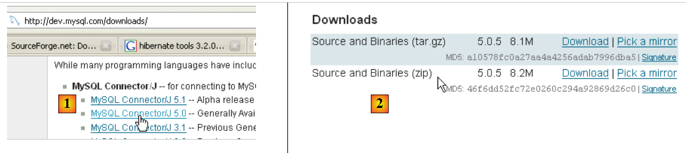 |
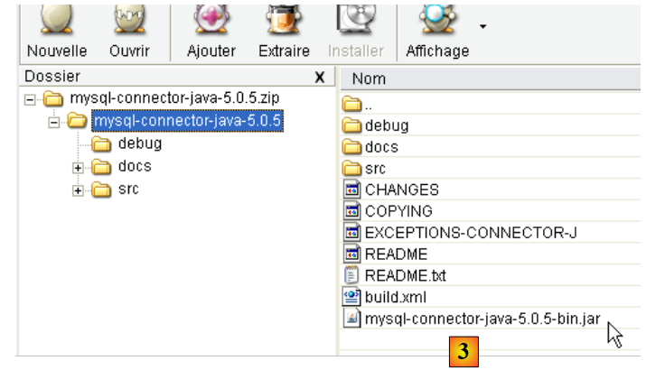 |
- في [1]: اختر برنامج تشغيل JDBC المناسب
- في [2]: حدد إصدار Windows المناسب
- في [3]: في ملف ZIP الذي تم تنزيله، أرشيف Java الذي يحتوي على برنامج تشغيل JDBC هو [mysql-connector-java-5.0.5-bin.jar]. سنقوم باستخراجه لاستخدامه في أمثلة دروس JPA.
نضعه كما فعلنا من قبل (القسم 5.4.7) في مجلد <jdbc>:
 |
لاختبار برنامج تشغيل JDBC هذا، سنستخدم Eclipse والمكوّن الإضافي SQL Explorer. ندعو القارئ إلى اتباع الإجراء الموضح في القسم 5.4.7. نقدم بعض لقطات الشاشة ذات الصلة:
 |
- في [1]: قمنا باختيار أرشيف برنامج تشغيل MySQL5 JDBC
- في [2]: برنامج تشغيل JDBC الخاص بـ MySQL5 متاح
 |
- في [3]: تعريف الاتصال (المستخدم، كلمة المرور)=(jpa، jpa)
- في [4]: الاتصال نشط
- في [5]: قاعدة البيانات متصلة
5.6. نظام إدارة قواعد البيانات PostgreSQL
5.6.1. التثبيت
نظام إدارة قواعد البيانات PostgreSQL متاح على الرابط [http://www.postgresql.org/download/]:
 |
- في [1]: مواقع تنزيل PostgreSQL
- في [2]: اختر إصدار Windows
- في [3]: اختر إصدارًا مزودًا ببرنامج تثبيت
 |
- [4]: محتويات ملف ZIP الذي تم تنزيله. انقر نقرًا مزدوجًا على ملف [postgresql-8.2.msi]
- في [5]: الصفحة الأولى من معالج التثبيت
 |
- في [6]: اختر التثبيت النموذجي بقبول القيم الافتراضية
- في [6b]: قم بإنشاء حساب Windows الذي سيقوم بتشغيل خدمة PostgreSQL؛ هنا، الحساب هو pgres وكلمة المرور هي pgres.
 |
- في [7]: دع PostgreSQL ينشئ حساب [pgres] إذا لم يكن موجودًا بالفعل
- في [8]: حدد حساب مسؤول نظام إدارة قواعد البيانات (DBMS)، وهو هنا postgres وكلمة المرور postgres
 |
- في [9] و[10]: اقبل القيم الافتراضية حتى نهاية المعالج. سيتم تثبيت PostgreSQL.
يؤدي تثبيت PostgreSQL إلى إنشاء مجلد في [ابدأ / البرامج]:

5.6.2. بدء / إيقاف PostgreSQL
تم تثبيت خادم PostgreSQL كخدمة Windows تبدأ تلقائيًا، أي أنها تنطلق فور بدء تشغيل Windows. هذا الإعداد ليس عمليًا للغاية. سنقوم بتغييره:
[ابدأ / لوحة التحكم / الأداء والصيانة / أدوات الإدارة / الخدمات]:
 |
- في [1]: انقر نقرًا مزدوجًا على [الخدمات]
- في [2]: نرى أن هناك خدمة باسم [PostgreSQL]، وأنها قيد التشغيل [3]، وأنها تبدأ تلقائيًا [4].
لتغيير هذا الإعداد، انقر نقرًا مزدوجًا على خدمة [PostgreSQL]:
 |
- في [1]: اضبط الخدمة على التشغيل اليدوي
- في [2]: أوقفها
- في [3]: نؤكد تكوين الخدمة الجديد
لبدء تشغيل خدمة PostgreSQL وإيقافها يدويًا، يمكنك استخدام الاختصارات الموجودة في مجلد [PostgreSQL]:
 |
- في [1]: الاختصار لبدء تشغيل PostgreSQL
- في [2]: الاختصار لإيقافها
5.6.3. إدارة PostgreSQL
في لقطة الشاشة أعلاه، يتيح لك تطبيق [pgAdmin III] (3) إدارة نظام إدارة قواعد البيانات PostgreSQL. لنقم بتشغيل نظام إدارة قواعد البيانات، ثم نطلق [pgAdmin III] عبر القائمة أعلاه:
 |
- في [1]: انقر نقرًا مزدوجًا على خادم PostgreSQL للاتصال به
- في [2،3]: قم بتسجيل الدخول كمسؤول نظام إدارة قواعد البيانات، هنا (postgres / postgres)
 |
- في [4]: قاعدة البيانات الوحيدة الموجودة
- في [5]: المستخدم الوحيد الموجود
5.6.4. إنشاء مستخدم jpa وقاعدة بيانات jpa
يستخدم البرنامج التعليمي PostgreSQL مع قاعدة بيانات باسم jpa ومستخدم يحمل نفس الاسم. سنقوم الآن بإنشائهما. أولاً، المستخدم:
 |
- في [1]: إنشاء دور جديد (~user)
- في [2]: إنشاء مستخدم jpa
- في [3]: كلمة المرور الخاصة بهم هي jpa
- في [4]: نكرر كلمة المرور
- في [5]: نمنح المستخدم إذنًا لإنشاء قواعد البيانات
- في [6]: يظهر المستخدم [jpa] ضمن أدوار تسجيل الدخول
الآن بالنسبة لقاعدة البيانات:
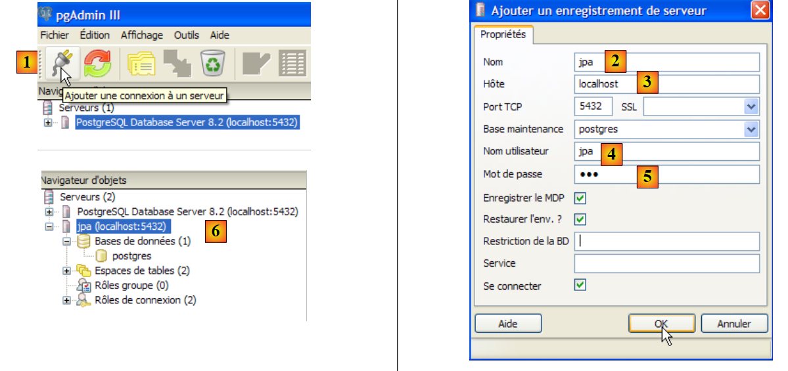 |
- في [1]: قم بإنشاء اتصال جديد بالخادم
- في [2]: سيتم تسميته jpa
- في [3]: الجهاز الذي نريد الاتصال به
- في [4]: اسم المستخدم الذي يقوم بتسجيل الدخول
- في [5]: كلمة المرور الخاصة به. نؤكد إعدادات الاتصال بالنقر فوق [موافق]
- في [6]: تم إنشاء الاتصال الجديد. وهو ينتمي إلى المستخدم jpa. سيقوم هذا المستخدم الآن بإنشاء قاعدة بيانات جديدة:
 |
- في [1]: أضف قاعدة بيانات جديدة
- في [2]: اسمها هو jpa
- في [3]: مالكها هو مستخدم jpa الذي تم إنشاؤه سابقًا. انقر على [موافق] للتأكيد
- في [4]: تم إنشاء قاعدة بيانات jpa. بنقرة واحدة عليها، يتم الاتصال بها ويظهر هيكلها:
 |
- في [5]: تظهر كائنات مخطط [jpa]، ولا سيما الجداول. لا يوجد أي منها حتى الآن. النقر بزر الماوس الأيمن سيسمح لنا بإنشائها. سنترك ذلك للقارئ.
سنقوم الآن بإنشاء نفس جدول [ARTICLES] كما في أنظمة إدارة قواعد البيانات السابقة باستخدام البرنامج النصي SQL [schema-articles.sql] الذي تم إنشاؤه في القسم 5.4.6.
 |
- في [1]: افتح محرر SQL
- في [2]: افتح نص SQL
- في [3]: حدد البرنامج النصي [schema-articles.sql] الذي تم إنشاؤه في القسم 5.4.6
 |
- في [4]: تم تحميل البرنامج النصي. نقوم بتنفيذه.
- في [5]: تم إنشاء الجدول [ARTICLES].
- في [6، 7]: محتوياته
5.6.5. برنامج تشغيل JDBC لـ PostgreSQL
برنامج تشغيل PostgreSQL JDBC متاح في المجلد [jdbc] داخل دليل تثبيت PostgreSQL:
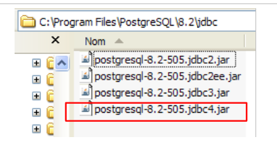 |
نضع أرشيف JDBC، كما في الحالات السابقة (القسم 5.4.7)، في المجلد <jdbc>:
 |
لاختبار برنامج تشغيل JDBC هذا، سنستخدم Eclipse والمكوّن الإضافي SQL Explorer. ندعو القارئ إلى اتباع الإجراء الموضح في القسم 5.4.7. ونقدم هنا بعض لقطات الشاشة ذات الصلة:
 |
- في [1]: قمنا باختيار أرشيف برنامج تشغيل PostgreSQL JDBC
- في [2]: برنامج تشغيل PostgreSQL JDBC متاح
 |
- في [3]: تعريف الاتصال (المستخدم، كلمة المرور)=(jpa، jpa)
- في [4]: الاتصال نشط
- في [5]: قاعدة البيانات المتصلة
- في [6]: محتويات جدول [ARTICLES]
5.7. نظام إدارة قواعد البيانات Oracle 10g Express
5.7.1. التثبيت
نظام إدارة قواعد البيانات Oracle 10g Express متاح على [http://www.oracle.com/technology/software/products/database/xe/index.html]:
 |
- في [1]: موقع تنزيل Oracle 10g Express
- في [2]: حدد إصدار Windows. بمجرد تنزيل الملف، قم بتشغيله:
 |
- في [1]: انقر نقرًا مزدوجًا على ملف [OracleXE.exe]
- في [2]: الصفحة الأولى من معالج التثبيت
 |
- في [3]: اقبل الترخيص
- في [4]: قبول الإعدادات الافتراضية.
 |
- في [5،6]: سيكون للمستخدم SYSTEM كلمة المرور "system".
- في [7]: ابدأ التثبيت
يؤدي تثبيت Oracle 10g Express إلى إنشاء مجلد في [ابدأ / البرامج]:

5.7.2. بدء / إيقاف Oracle 10g
كما هو الحال مع أنظمة إدارة قواعد البيانات السابقة، تم تثبيت Oracle 10g كخدمة Windows تبدأ تلقائيًا. سنقوم بتغيير هذا التكوين:
[ابدأ / لوحة التحكم / الأداء والصيانة / أدوات الإدارة / الخدمات]:
 |
- في [1]: نضغط مرتين على [الخدمات]
- في [2]: نرى أن هناك خدمة تسمى [OracleServiceXE]، وأنها قيد التشغيل [3]، وأنها تبدأ تلقائيًا [4].
- في [5]: خدمة Oracle أخرى، تسمى "Listener"، نشطة أيضًا ومضبوطة على البدء تلقائيًا.
لتغيير هذا السلوك، انقر نقرًا مزدوجًا على خدمة [OracleServiceXE]:
 |
- في [1]: اضبط الخدمة على التشغيل اليدوي
- في [2]: نقوم بإيقافها
- في [3]: نؤكد تكوين الخدمة الجديد
سنفعل الشيء نفسه مع خدمة [OracleXETNSListener] (انظر [5] أعلاه). لبدء تشغيل خدمة OracleServiceXE وإيقافها يدويًا، يمكننا استخدام الاختصارات الموجودة في مجلد [Oracle]:
 |
- في [1]: لبدء تشغيل نظام إدارة قواعد البيانات
- في [2]: لإيقافه
- في [3]: لإدارته (مما يؤدي إلى تشغيله إذا لم يكن قيد التشغيل بالفعل)
5.7.3. إنشاء مستخدم jpa وقاعدة بيانات jpa
في لقطة الشاشة أعلاه، يتيح لك التطبيق [3] إدارة نظام إدارة قواعد البيانات Oracle 10g Express. لنبدأ تشغيل نظام إدارة قواعد البيانات [1]، ثم تطبيق الإدارة [3] عبر القائمة أعلاه:
 |
- في [1]: قم بتسجيل الدخول كمسؤول نظام إدارة قواعد البيانات، هنا (system/system)
- في [2]: قم بإنشاء مستخدم جديد
 |
- في [4]: اسم المستخدم
- في [5، 6]: كلمة المرور الخاصة به، هنا jpa
- في [7]: تم إنشاء المستخدم jpa
في Oracle، يتم ربط المستخدم تلقائيًا بقاعدة بيانات تحمل الاسم نفسه. وبالتالي، فإن قاعدة البيانات jpa موجودة في نفس الوقت الذي يوجد فيه المستخدم jpa.
5.7.4. إنشاء الجدول [ARTICLES] في قاعدة بيانات jpa
تم تثبيت OracleXE مع عميل SQL يعمل في وضع سطر الأوامر. يمكنك العمل بشكل أكثر راحة باستخدام SQL Develope ، الذي توفره Oracle أيضًا. يمكن العثور عليه على:
[http://www.oracle.com/technology/products/database/sql_developer/index.html]
 |
- في [1]: موقع التنزيل
- في [2]: اختر إصدار Windows بدون JRE إذا كان مثبتًا بالفعل (كما هو الحال هنا)، نظرًا لأن [SQL Developer] هو تطبيق Java.
 |
- [3]: قم بفك ضغط الملف الذي تم تنزيله
- في [4]: قم بتشغيل الملف القابل للتنفيذ [sqldeveloper.exe]
 |
- في [5]: عند تشغيل [SQL Developer] لأول مرة، حدد مسار JRE المثبت على الجهاز
- في [5b]: قم بإنشاء اتصال جديد
 |
- في [6]: يتيح لك SQL Developer الاتصال بأنظمة إدارة قواعد البيانات المختلفة. حدد Oracle.
- في [7]: الاسم الممنوح للاتصال الذي تقوم بإنشائه
- في [8]: مالك الاتصال
- في [9]: كلمة المرور الخاصة به (jpa)
- في [10]: احتفظ بالقيم الافتراضية
- في [11]: لاختبار الاتصال (يجب أن يكون Oracle قيد التشغيل)
- في [12]: لإكمال تكوين الاتصال
- في [13]: الكائنات الموجودة في قاعدة بيانات jpa
- في [14]: يمكنك إنشاء جداول. كما في الحالات السابقة، سننشئ الجدول [ARTICLES] باستخدام البرنامج النصي الذي تم إنشاؤه في القسم 5.4.6.
 |
- في [15]: افتح نص برمجي SQL
- في [16]: حدد البرنامج النصي SQL الذي تم إنشاؤه في القسم 5.4.6
- في [17]: البرنامج النصي المراد تنفيذه
 |
- في [18]: نتيجة التنفيذ: تم إنشاء الجدول [ARTICLES]. انقر عليه مرتين للوصول إلى خصائصه.
- في [19]: محتويات الجدول.
5.7.5. برنامج تشغيل JDBC لـ OracleXE
برنامج تشغيل OracleXE JDBC متاح في المجلد [jdbc/lib] داخل دليل تثبيت OracleXE [1]:
 |
نضع أرشيف JDBC [ojdbc14.jar] في المجلد <jdbc> [2]، تمامًا كما فعلنا سابقًا (القسم 5.4.7):
لاختبار برنامج تشغيل JDBC هذا، سنستخدم Eclipse ومكوّن SQL Explorer الإضافي. ندعو القارئ إلى اتباع الإجراء الموضح في القسم 5.4.7. نقدم بعض لقطات الشاشة ذات الصلة:
 |
- في [1]: حددنا أرشيف برنامج تشغيل OracleXE JDBC
- في [2]: برنامج تشغيل OracleXE JDBC متاح
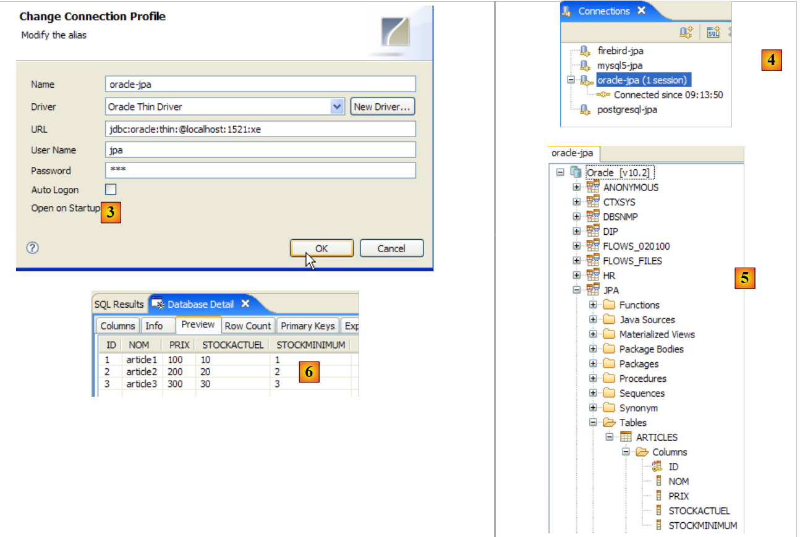 |
- في [3]: تعريف الاتصال (المستخدم، كلمة المرور)=(jpa، jpa)
- في [4]: الاتصال نشط
- في [5]: قاعدة البيانات المتصلة
- في [6]: محتويات جدول [ARTICLES]
5.8. نظام إدارة قواعد البيانات (DBMS) هو SQL Server Express 2005 من شركة
5.8.1. التثبيت
يتوفر SQL Server Express 2005 على الرابط [http://msdn.microsoft.com/vstudio/express/sql/download/]:
 |
- في [1]: قم أولاً بتنزيل وتثبيت منصة .NET 2.0
- في [2]: ثم قم بتثبيت وتنزيل SQL Server Express 2005
- الخطوة [3]: بعد ذلك، قم بتنزيل وتثبيت SQL Server Management Studio Express، الذي يتيح لك إدارة SQL Server
يؤدي تثبيت SQL Server Express إلى إنشاء مجلد في [ابدأ / البرامج]:
 |
- في [1]: تطبيق تكوين SQL Server. كما يتيح لك تشغيل/إيقاف الخادم
- في [2]: تطبيق إدارة الخادم
5.8.2. تشغيل / إيقاف SQL Server
كما هو الحال مع أنظمة إدارة قواعد البيانات السابقة، تم تثبيت SQL Server Express كخدمة Windows تبدأ تلقائيًا. سنقوم بتغيير هذا التكوين:
[ابدأ / لوحة التحكم / الأداء والصيانة / أدوات الإدارة / الخدمات]:
 |
- في [1]: نضغط مرتين على [الخدمات]
- في [2]: نرى أن هناك خدمة تسمى [SQL Server]، وأنها قيد التشغيل [3]، وأنها تبدأ تلقائيًا [4].
- في [5]: توجد خدمة أخرى مرتبطة بـ SQL Server، تسمى "SQL Server Browser"، وهي نشطة أيضًا ومضبوطة على التشغيل التلقائي.
لتغيير هذا السلوك، انقر نقرًا مزدوجًا على خدمة [SQL Server]:
 |
- في [1]: اضبط الخدمة على التشغيل اليدوي
- في [2]: نقوم بإيقافها
- في [3]: نؤكد تكوين الخدمة الجديد
سنفعل الشيء نفسه مع خدمة [SQL Server Browser] (انظر [5] أعلاه). لبدء تشغيل خدمة SQL Server وإيقافها يدويًا، يمكننا استخدام التطبيق [1] الموجود في مجلد [SQL Server]:
 |
 |
- في [1]: تأكد من تمكين بروتوكول TCP/IP، ثم انتقل إلى خصائص البروتوكول.
- في [2]: في علامة التبويب [عناوين IP]، خيار [IPAll]:
- يُترك حقل [المنافذ الديناميكية لـ TCP] فارغًا
- يتم تعيين منفذ الاستماع للخادم على 1433 في [منفذ TCP]
 |
- في [3]: النقر بزر الماوس الأيمن على خدمة [SQL Server] يتيح الوصول إلى خيارات بدء/إيقاف الخادم. هنا، نقوم بتشغيله.
- في [4]: تم تشغيل SQL Server
5.8.3. إنشاء مستخدم jpa وقاعدة بيانات jpa
قم بتشغيل نظام إدارة قواعد البيانات (DBMS) كما هو موضح أعلاه، ثم قم بتشغيل تطبيق الإدارة [1] عبر القائمة أدناه:
 |
 |
- في [1]: قم بتسجيل الدخول إلى SQL Server كمسؤول Windows
- في [2]: قم بتكوين خصائص الاتصال
 |
- في [3]: نقوم بتمكين الوضع المختلط للاتصال بالخادم: إما باستخدام تسجيل دخول Windows (مستخدم Windows) أو باستخدام تسجيل دخول SQL Server (حساب محدد داخل SQL Server، مستقل عن أي حساب Windows).
- في [3b]: إنشاء مستخدم SQL Server
 |
- في [4]: علامة التبويب [عام]
- في [5]: اسم المستخدم
- في [6]: كلمة المرور (jpa هنا)
- في [7]: خيار [أدوار الخادم]
- في [8]: سيكون للمستخدم jpa الحق في إنشاء قواعد البيانات
تأكد من صحة هذا التكوين:
 |
- في [9]: تم إنشاء المستخدم jpa
- في [10]: تسجيل الخروج
- في [11]: تسجيل الدخول مرة أخرى
 |
- في [12]: تسجيل الدخول كمستخدم jpa/jpa
- في [13]: بمجرد تسجيل الدخول، يقوم المستخدم jpa بإنشاء قاعدة بيانات
 |
- في [14]: ستسمى قاعدة البيانات jpa
- في [15]: وستكون مملوكة للمستخدم jpa
- في [16]: تم إنشاء قاعدة بيانات jpa
5.8.4. إنشاء جدول [ARTICLES] في قاعدة بيانات jpa
كما في الأمثلة السابقة، سنقوم بإنشاء جدول [ARTICLES] باستخدام البرنامج النصي الذي تم إنشاؤه في القسم 5.4.6.
 |
- في [1]: نفتح نص برمجي SQL
- في [2]: حدد البرنامج النصي SQL الذي تم إنشاؤه في القسم 5.4.6، الصفحة 240.
- في [3]: قم بتسجيل الدخول مرة أخرى (jpa/jpa)
- في [4]: البرنامج النصي المراد تنفيذه
- في [5]: حدد قاعدة البيانات التي سيتم تنفيذ البرنامج النصي فيها
- في [6]: قم بتنفيذه
 |
- في [7]: نتيجة التنفيذ: تم إنشاء الجدول [ARTICLES].
- في [8]: نطلب عرض محتوياته
- في [9]: محتويات الجدول.
5.8.5. برنامج تشغيل JDBC لـ SQL Server Express
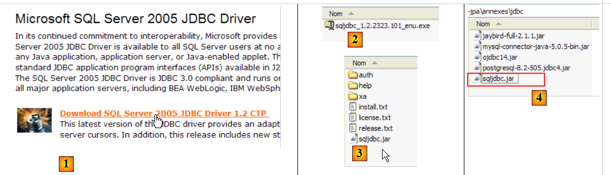 |
- في [1]: يؤدي البحث في Google عن [Microsoft SQL Server 2005 JDBC Driver] إلى انتقالنا إلى صفحة تنزيل برنامج تشغيل JDBC. نختار أحدث إصدار
- في [2]: الملف الذي تم تنزيله. نضغط عليه مرتين. يتم استخراج الملف، مما يؤدي إلى إنشاء مجلد يحتوي على برنامج تشغيل JDBC [3]
- في [4]: نضع أرشيف JDBC [sqljdbc.jar] في مجلد <jdbc>، تمامًا كما فعلنا سابقًا (القسم 5.4.7)
لاختبار برنامج تشغيل JDBC هذا، سنستخدم Eclipse والمكوّن الإضافي SQL Explorer. ندعو القارئ إلى اتباع الإجراء الموضح في القسم 5.4.7. نقدم بعض لقطات الشاشة ذات الصلة:
 |
- في [1]: حددنا أرشيف برنامج تشغيل JDBC لـ SQL Server
- في [2]: برنامج تشغيل JDBC لـ SQL Server متاح
 |
- في [3]: تعريف الاتصال (المستخدم، كلمة المرور)=(jpa، jpa)
- في [4]: الاتصال نشط
- في [5]: قاعدة البيانات المتصلة
- في [6]: محتويات جدول [ARTICLES]
5.9. نظام إدارة قواعد البيانات HSQLDB
5.9.1. التثبيت
نظام إدارة قواعد البيانات HSQLDB متاح على الرابط [http://sourceforge.net/projects/hsqldb]. وهو نظام إدارة قواعد بيانات مكتوب بلغة Java، وخفيف الوزن جدًا في الذاكرة، ويدير قواعد البيانات في الذاكرة بدلاً من القرص. والنتيجة هي تنفيذ استعلامات سريع للغاية. وهذه هي ميزته الرئيسية. يمكن استعادة قواعد البيانات التي تم إنشاؤها في الذاكرة بهذه الطريقة عند إيقاف تشغيل الخادم ثم إعادة تشغيله. وذلك لأن أوامر SQL الصادرة لإنشاء قواعد البيانات يتم تخزينها في ملف سجل ليتم إعادة تشغيلها عند بدء تشغيل الخادم في المرة التالية. وهذا يضمن استمرارية قواعد البيانات بمرور الوقت.
هذه الطريقة لها حدودها، وHSQLDB ليس نظام إدارة قواعد بيانات تجاري. تكمن قيمته الرئيسية في تطبيقات الاختبار أو العرض التوضيحي. على سبيل المثال، حقيقة أن HSQLDB مكتوب بلغة Java تسمح بتضمينه في مهام Ant (Another Neat Tool)، وهي أداة أتمتة مهام Java. وبالتالي، يمكن أن تتضمن اختبارات الكود اليومية للبرامج قيد التطوير، والتي يتم أتمتتها بواسطة Ant، اختبارات قواعد البيانات التي يديرها نظام إدارة قواعد البيانات HSQLDB. سيتم تشغيل الخادم وإيقافه وإدارته بواسطة مهام Java.
 |
- في [1]: موقع التنزيل
- في [2]: قم بتنزيل أحدث إصدار
 |
- في [3]: قم بفك ضغط الملف الذي تم تنزيله
- في [4]: المجلد [hsqldb] الناتج عن عملية الاستخراج
- في [5]: المجلد [demo] الذي يحتوي على البرنامج النصي لتشغيل خادم [hsql] [6] وفي [7]، البرنامج النصي لتشغيل أداة إدارة الخادم الأساسية.
5.9.2. بدء / إيقاف HSQLDB
لبدء تشغيل خادم HSQLDB، انقر نقرًا مزدوجًا على تطبيق [runManager.bat] [6] أعلاه:
 |
- في [1]: يمكنك ملاحظة أنه لإيقاف الخادم، ما عليك سوى الضغط على Ctrl-C في النافذة.
5.9.3. قاعدة البيانات [test]
تقع قاعدة البيانات الافتراضية في مجلد [data]:
 |
- في [1]: عند بدء التشغيل، يقوم نظام إدارة قواعد البيانات HSQL بتنفيذ البرنامج النصي المسمى [test.script]
- السطر 1: تم إنشاء مخطط [public]
- السطر 2: إنشاء مستخدم [sa] بكلمة مرور فارغة
- السطر 3: منح المستخدم [sa] امتيازات إدارية
في النهاية، تم إنشاء مستخدم يتمتع بامتيازات إدارية. هذا هو المستخدم الذي سنستخدمه من الآن فصاعدًا.
5.9.4. برنامج تشغيل HSQL JDBC
يوجد برنامج تشغيل JDBC لنظام إدارة قواعد البيانات HSQL في المجلد [lib]:
 |
- في [1]: يحتوي أرشيف [hsqldb.jar] على برنامج تشغيل JDBC لنظام إدارة قواعد البيانات HSQL
- في [2]: نضع هذا الأرشيف، مثل الأرشيفات السابقة (القسم 5.4.7)، في المجلد <jdbc>
للتحقق من برنامج تشغيل JDBC هذا، سنستخدم Eclipse ومكوّن SQL Explorer الإضافي. ندعو القارئ إلى اتباع الإجراء الموضح في القسم 5.4.7. نقدم بعض لقطات الشاشة ذات الصلة:
 |
- في [1]: [Window / Preferences / SQL Explorer / JDBC Drivers]
- في [2]: تكوين خادم [HSQLDB]
- في [3]: حدد الأرشيف [hsqldb.jar] الذي يحتوي على برنامج تشغيل JDBC
- في [4]: اسم فئة Java لبرنامج تشغيل Jdbc
- في [5]: تم تكوين برنامج تشغيل JDBC
بمجرد الانتهاء من ذلك، نقوم بالاتصال بخادم HSQL. نبدأ بتشغيل الخادم أولاً.
 |
- في [6]: قم بإنشاء اتصال جديد
- في [7]: قم بتسميته
- في [8]: نريد الاتصال بخادم HSQLDB
- في [9]: عنوان URL لقاعدة البيانات التي تريد الاتصال بها. ستكون هذه قاعدة البيانات [test] التي رأيناها سابقًا.
- في [10]: قم بتسجيل الدخول كمستخدم [sa]. لقد رأينا أنه هو مسؤول نظام إدارة قواعد البيانات.
- في [11]: المستخدم [sa] ليس لديه كلمة مرور.
نقوم بالتحقق من صحة تكوين الاتصال.
 |
- في [12]: نقوم بالاتصال
- في [13]: نقوم بتسجيل الدخول
- في [14]: لقد قمت بتسجيل الدخول
 |
- في [15]: لا يحتوي مخطط [PUBLIC] على جدول بعد
- في [16]: سنقوم بإنشاء جدول [ARTICLES] باستخدام البرنامج النصي [schema-articles.sql] الذي تم إنشاؤه في القسم 5.4.6.
- في [17]: حدد البرنامج النصي
 |
- في [18]: البرنامج النصي المطلوب تنفيذه
- في [19]: نقوم بتشغيله بعد إزالة جميع التعليقات، حيث لا يقبلها HSQLB.
 |
- بمجرد تشغيل البرنامج النصي، قم بتحديث عرض قاعدة البيانات في [20]
- في [21]: يوجد جدول [ARTICLES]
- في [22]: محتوياته
دعونا نوقف خادم HSQLDB ثم نعيد تشغيله. بمجرد الانتهاء من ذلك، دعونا نفحص ملف [test.script]:
يمكننا أن نرى أن نظام إدارة قواعد البيانات (DBMS) قد خزن مختلف عبارات SQL التي تم تنفيذها خلال الجلسة السابقة وأعاد تنفيذها عند بدء الجلسة الجديدة. يمكننا أيضًا أن نرى (السطر 2) أن الجدول [ARTICLES] تم إنشاؤه في الذاكرة (MEMORY). في بداية كل جلسة، يتم تخزين عبارات SQL الصادرة في [test.log] ليتم نسخها في بداية الجلسة التالية إلى [test.script] وإعادة تشغيلها في بداية الجلسة.
5.10. نظام إدارة قواعد البيانات Apache Derby
5.10.1. التثبيت
نظام إدارة قواعد البيانات Apache Derby متاح على الرابط [http://db.apache.org/derby/]. وهو نظام إدارة قواعد بيانات مكتوب أيضًا بلغة Java ويتميز أيضًا بخفة وزنه في الذاكرة. ويقدم مزايا مشابهة لتلك التي يقدمها HSQLDB. ويمكن أيضًا تضمينه في تطبيقات Java، أي أن يكون جزءًا لا يتجزأ من التطبيق ويتم تشغيله داخل نفس JVM.
 |
- في [1]: موقع التنزيل
- في [2،3]: تنزيل أحدث إصدار
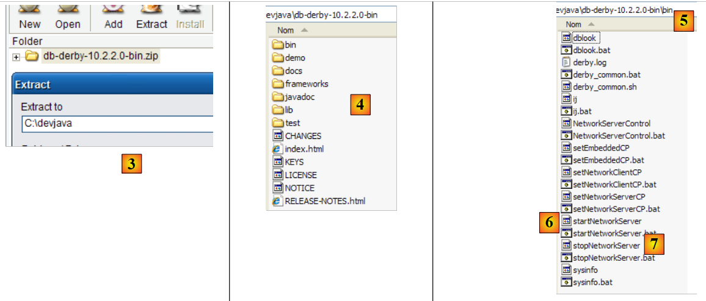 |
- في [3]: قم بفك ضغط الملف الذي تم تنزيله
- في [4]: المجلد [db-derby-*-bin] الناتج عن عملية فك الضغط
- في [5]: المجلد [bin] الذي يحتوي على البرنامج النصي لتشغيل خادم [db derby] [6] وفي [7]، البرنامج النصي لإيقافه.
5.10.2. تشغيل / إيقاف Apache Derby (DB Derby)
لبدء تشغيل خادم Db Derby، انقر نقرًا مزدوجًا على تطبيق [startNetworkServer] [6] أعلاه:
 |
- في [1]: تم تشغيل الخادم. سيتم إيقافه باستخدام تطبيق [stopNetworkServer] [7] أعلاه.
5.10.3. برنامج تشغيل JDBC لـ Db Derby
يوجد برنامج تشغيل JDBC لنظام إدارة قواعد البيانات Db Derby في المجلد [lib] في دليل التثبيت:
 |
- في [1]: يحتوي الأرشيف [derbyclient.jar] على برنامج تشغيل JDBC لنظام إدارة قواعد البيانات Db Derby
- في [2]: نضع هذا الأرشيف، مثل الأرشيفات السابقة (القسم 5.4.7)، في المجلد <jdbc>
لاختبار برنامج تشغيل JDBC هذا، سنستخدم Eclipse والمكوّن الإضافي SQL Explorer. ندعو القارئ إلى اتباع الإجراء الموضح في القسم 5.4.7. نقدم بعض لقطات الشاشة ذات الصلة:
 |
- في [1]: [Window / Preferences / SQL Explorer / JDBC Drivers]
- في [2]: برنامج تشغيل Apache Derby JDBC غير موجود في القائمة. نقوم بإضافته.
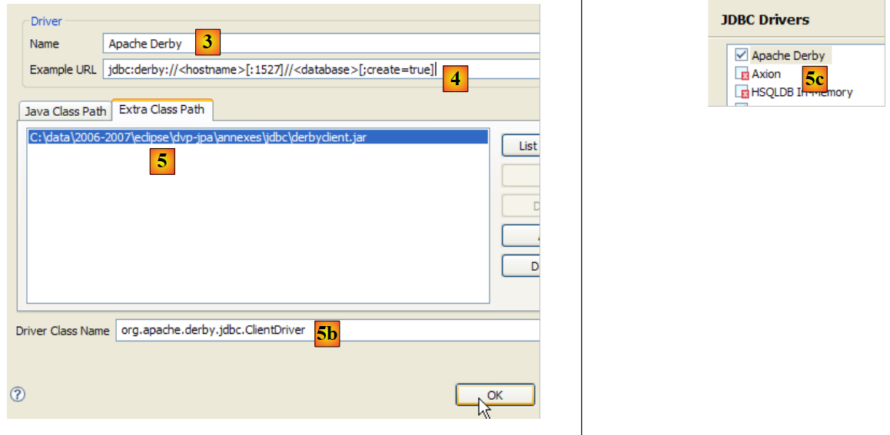 |
- في [3]: نسمي برنامج التشغيل الجديد
- في [4]: نحدد تنسيق عناوين URL التي يدعمها برنامج تشغيل JDBC
- في [5]: نحدد ملف .jar الخاص ببرنامج تشغيل JDBC
- في [5b]: اسم فئة Java لبرنامج تشغيل JDBC
- في [5c]: تم تكوين برنامج تشغيل JDBC
بمجرد الانتهاء من ذلك، قم بالاتصال بخادم Apache Derby. قم بتشغيل الخادم مسبقًا.
 |
- في [6]: إنشاء اتصال جديد
- في [7]: نسميه
- في [8]: نريد الاتصال بخادم Apache Derby
- في [9]: عنوان URL لقاعدة البيانات التي نريد الاتصال بها. بعد البادئة القياسية [jdbc:derby://localhost:1527]، سنحدد المسار إلى دليل على القرص يحتوي على قاعدة بيانات Derby. يتيح لنا الخيار [create=true] إنشاء هذا الدليل إذا لم يكن موجودًا بعد.
- في [10،11]: نتصل كمستخدم [jpa/jpa]. لم أبحث في هذا الأمر بعمق، ولكن يبدو أنه يمكنك استخدام أي اسم مستخدم وكلمة مرور تريدهما. هنا نحدد مالك قاعدة البيانات إذا كان create=true.
نقوم بالتحقق من صحة تكوين الاتصال.
 |
- في [12]: تسجيل الدخول
- في [13]: تسجيل الدخول (jpa/jpa)
- في [14]: لقد قمت بتسجيل الدخول
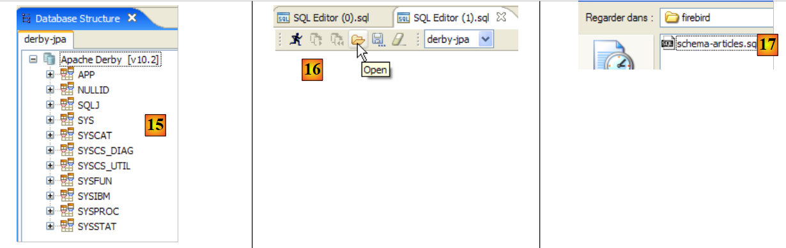 |
- في [15]: لا يظهر مخطط [jpa] بعد.
- في [16]: سنقوم بإنشاء جدول [ARTICLES] من البرنامج النصي [schema-articles.sql] الذي تم إنشاؤه في القسم 5.4.6.
- في [17]: حدد البرنامج النصي
 |
- في [18]: البرنامج النصي المراد تنفيذه
- في [19]: نقوم بتنفيذه بعد إزالة جميع التعليقات، لأن Apache Derby، مثل HSQLB، لا يقبلها.
 |
- بمجرد تشغيل البرنامج النصي، قم بتحديث عرض قاعدة البيانات في [20]
- في [21]: مخطط [jpa] وجدول [ARTICLES] موجودان
- في [22]: محتويات جدول [ARTICLES]
 |
- في [23]: محتويات المجلد [derby\jpa] حيث تم إنشاء قاعدة البيانات.
5.11. إطار عمل Spring 2
إطار عمل Spring 2 متاح على الرابط [http://www.springframework.org/download]:
 |
- في [1]: قم بتنزيل أحدث إصدار
- في [2]: قم بتنزيل الإصدار المسمى "مع التبعيات" لأنه يحتوي على ملفات .jar للأدوات الخارجية التي يدمجها Spring والتي تحتاجها دائمًا.
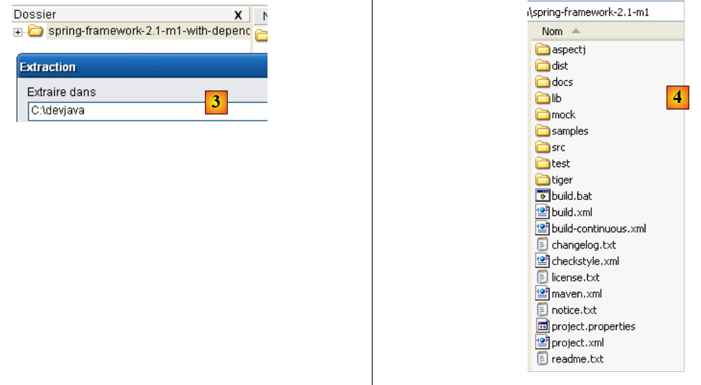 |
- في [3]: قم بفك ضغط الأرشيف الذي تم تنزيله
- في [4]: مجلد تثبيت Spring 2.1
 |
- في [5]: في مجلد <dist>، ستجد أرشيفات Spring. يحتوي أرشيف [spring.jar] على جميع فئات إطار عمل Spring. هذه الفئات متوفرة أيضًا حسب الوحدة النمطية في مجلد <modules> في [6]. إذا كنت تعرف الوحدات النمطية التي تحتاجها، فيمكنك العثور عليها هنا. بهذه الطريقة، تتجنب تضمين أرشيفات في التطبيق لا يحتاجها.
 |
- في [7]: يحتوي المجلد <lib> على أرشيفات أدوات الجهات الخارجية التي يستخدمها Spring
- في [8]: بعض الأرشيفات من مشروع [jakarta-commons]
عندما يستخدم البرنامج التعليمي أرشيفات Spring، يجب عليك استردادها إما من المجلد <dist> أو المجلد <lib> داخل دليل تثبيت Spring.
5.12. حاوية JBoss EJB3
حاوية JBoss EJB3 متاحة على عنوان URL [http://labs.jboss.com/jbossejb3/downloads/embeddableEJB3]:
 |
- في [1]: قم بتنزيل JBoss EJB3. لاحظ تاريخ المنتج (سبتمبر 2006)، على الرغم من أن عملية التنزيل تتم في مايو 2007. قد يتساءل المرء عما إذا كان هذا المنتج لا يزال قيد التطوير.
- في [2]: الملف الذي تم تنزيله
 |
- في [3]: ملف ZIP الذي تم فك ضغطه
- في [4]: تشكل الأرشيفات [hibernate-all.jar، jboss-ejb3-all.jar، thirdparty-all.jar] حاوية JBoss EJB3. يجب وضعها في مسار فئات التطبيق الذي يستخدم هذه الحاوية.